Section XII - Appendix Tables
Page 317

muca SECTION APPENDIX TABLES HEAT LOSS - BARE SURFACE BTU LOSS per lineal foot of horizontal pipe for one hour OPERATING TEMPERATURE OF Ape Sü•e INCHES 0.5 0.75 1.25 2 2.5 3 4 s 8 10 12 14 18 20 24 FLAT Top Ver•tical 3000 212' 157 270 312 181 209 364 244 427 470 268 312 551 357 635 412 736 497 895 584 1060 670 1224 Bee 152B 996 1849 1152 2152 1250 2340 1406 2642 1561 2944 1716 3246 2027 3849 BTU LOSS 212' 3000 350 673 594 227 442 aoo• 417 486 570 674 744 880 1019 1189 1457 1737 2015 2536 3086 3605 3929 4448 4967 5486 6524 500' 591 6S3 817 973 1078 1283 1493 1752 2162 2592 3019 3820 4668 546B 5967 676B 756B 8369 9970 soo• 798 941 1115 1336 1487 1779 2081 2453 3664 4282 5441 6668 7827 8551 9711 10870 12030 14350 700' 1044 1239 1476 1779 1985 2388 2804 3318 4136 4998 5856 7465 9170 10780 11790 13400 15010 16630 19850 800' 1338 1595 1911 2315 2591 3131 3689 4379 5480 6643 7799 9967 12260 14440 15790 17970 20140 22320 26670 900' 1687 2022 2433 2960 3322 4030 4762 5669 7117 8648 10170 13020 16040 18900 20690 23550 26420 29290 35020 1000' 2101 2529 3055 3732 419B 5111 6053 7221 9091 11070 13030 16710 20600 24290 26600 30300 37700 45110 1100' 2588 3128 3791 4649 2539 6398 7590 9071 11450 13950 16450 21110 26030 30720 33650 38350 43050 47750 57150 per square foot of flat plate for one hour OPERATING TEMPERATURE OF 400• 1138 1016 777 600' 5000 2468 1728 1562 2258 1234 1 B40 7000 3388 3134 2628 800' 4519 4224 3632 9000 5898 5562 4886 1000' 7561 7187 6429 11000 9546 9135 8299 1200' 3158 3830 4657 5729 6466 7916 9406 11260 14230 17360 20480 26300 32440 38310 41960 47840 53730 59610 71370 1200• 11890 11440 10530 ASSUMPTIONS: Homzontal Äeel pvpe.
Schedule 40, wth bare surface emiSstvrW Of 0 80.
ambent condlbons Of 21 • C (700 F ) wth 00055 m/s (2 mph) Wind velocity Fiat steel plata 6 35 mm ) thick.
With bare surface em;sstvty of 0 30.
ambient conditions ot 21 • C (700 F ) and 00055 m/s (2 mph) wtnd velocty All heat loss data IS demved frorn the NAIMA computer program.
3E PLUS.
Verston 4 0, TABLE 12.1 307
Page 318
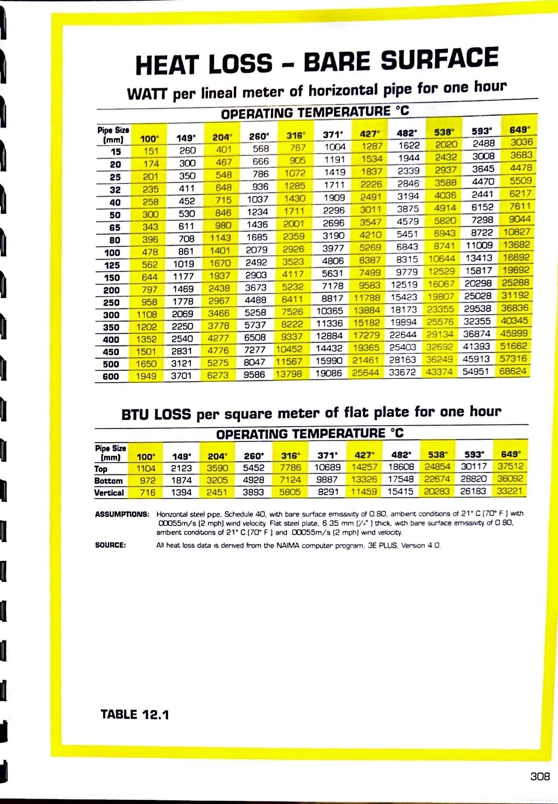
HEAT LOSS - BARE SURFACE WATr per lineal meter of horizontal pipe for one hour OPERATING TEMPERATURE oc Pipe Size (mm) 15 20 25 32 40 50 65 80 100 125 150 200 250 300 350 400 450 500 600 100• 151 174 201 235 258 343 396 478 562 644 797 958 1108 1202 1352 1501 1650 1949 149' 260 300 350 411 452 530 611 708 861 1019 1177 1469 1778 2069 2250 2540 2831 3121 3701 204' 401 467 548 648 715 846 980 1143 1401 1670 1937 243B 2967 3466 377B 4277 4776 5275 6273 260' 568 666 786 936 1037 1234 1436 1685 2079 2492 2903 3673 4488 5258 5737 6508 7277 8047 9586 315 767 905 1072 1285 1430 1711 2001 2359 2926 3523 4117 5232 6411 7526 8222 9337 10452 11567 13798 1 ooa 1191 1419 1711 1909 2296 2696 3190 3977 4806 5631 7178 8817 10365 11336 12884 14432 15990 19086 1287 1534 1837 2226 2491 3011 4210 5269 6387 7499 9583 11788 13884 15182 17279 19365 21461 25644 482" 1622 1944 2339 2846 3194 3875 4579 5451 6843 8315 9779 12519 15423 18173 19894 22644 25403 28163 33672 538• 2020 2432 2937 3588 4036 4914 5820 6943 8741 10644 12529 16067 19807 23355 25576 32692 36249 43374 5930 2488 3645 4470 2441 6152 7298 8722 11009 13413 15817 20298 25028 29538 32355 36874 41393 45913 54951 649• 3036 3683 4478 5509 6217 7611 10827 13682 16692 19692 2528B 31192 36836 40345 45999 51662 57316 68624 BTU LOSS per square meter of flat plate for one hour OPERATING TEMPERATURE oc Pipe Size (mm) Top Bottom Vertical 100' 1104 972 716 14s• 2123 1874 1394 204• 3590 3205 2451 eso• 5452 4928 3893 316• 7786 7124 5805 371• 10689 9887 8291 482• 14257 18608 13326 17548 11459 15415 538• 24854 22674 593• 30117 28820 261 ga sas• 37512 33221 ASSUMPTIONS: Hortzo&l steel Pipe.
40.
wtth bare surface emissMty of 0.80.
ambient condmns cf 21 • C (70• F ) mth SOURCE: OCI)55m/s (2 mph) wtnd velocity Flat steel plate.
6 35 mm C/.• ) thick.
bare surface ernjssmty of 080.
ambient condlüons of 21 • C (70' F and n055m/s (2 mph) wtnd veloctC/ Ali heat loss data IS derrved from the NAIMA computer pmgram.
3E PLUS.
Ver-yon a O.
TABLE 12.1 308
Page 319
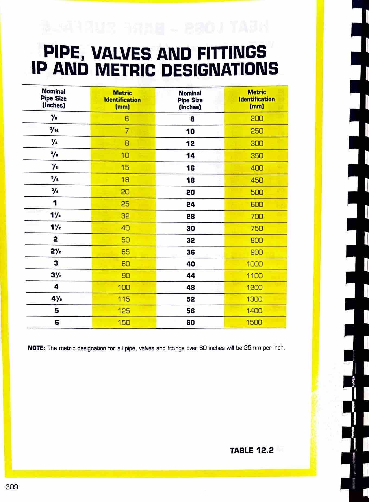
PIPE, VALVES AND FITTINGS IP AND METRIC DESIGNATIONS Nominal Pipe Size (Inches) 21/2 41/2 Identification (mm) 10 15 18 25 32 65 80 go 100 115 125 150 Nominal Pipe Size (Inches) 10 14 16 20 24 28 30 32 36 40 4B 52 56 so Metric Identification (mm) 250 300 350 450 500 600 700 750 800 1000 1100 1200 1300 1400 1500 NOTE: The metrjc designation for all pipe, valves and füngs over 60 inches Will be 25mm per inch TABLE 12.2 aog
Page 320
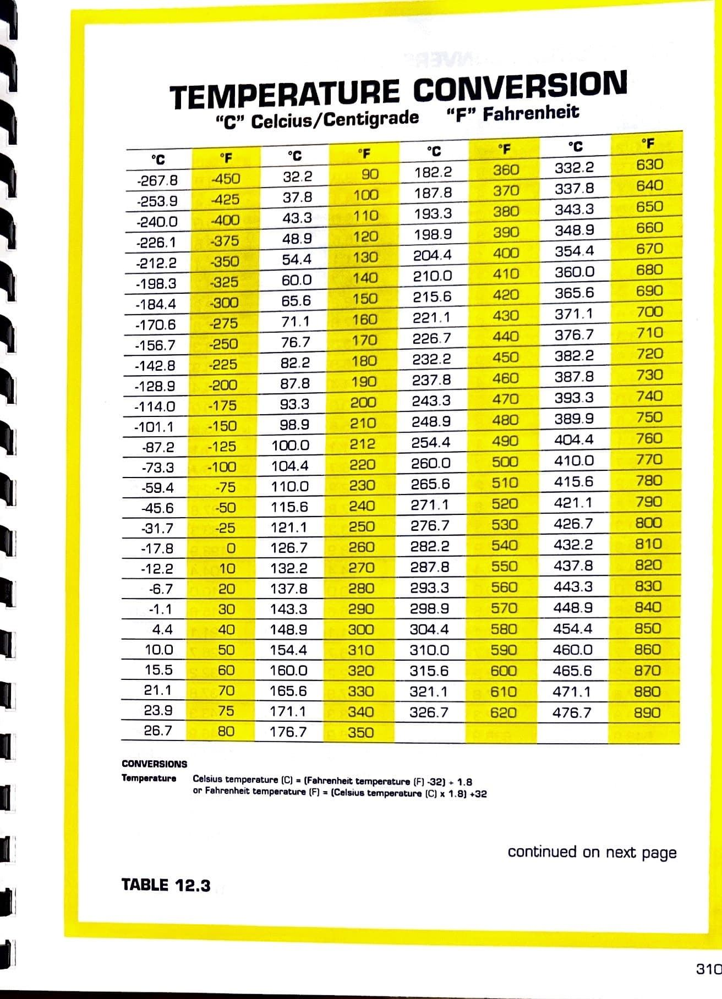
TEMPERATURE CONVERSION "F" Fahrenheit "C" Celcius/Centigrade -2678 -253.9 -240.0 -226.1 -212.2 -198.3 -184.4 -170.6 -156.7 -142.8 -128.9 -114.0 -101.1 -87.2 -73.3 -59.4 -45.6 -31.7 -17.8 -12.2 -6.7 -1.1 4.4 10.0 15.5 21.1 23.9 26.7 CONVERSIONS OF -450 -425 -400 075 050 025 -300 275 -250 -225 -200 -175 -150 -125 -100 -75 -50 -25 o 10 20 ao 40 50 60 70 75 80 32 2 37.8 43.3 48.9 600 65.6 71.1 76.7 822 87.8 93.3 98.9 100.0 104.4 110.0 115.6 121.1 126.7 132.2 137.8 143.3 148.9 154.4 160.0 165.6 171.1 176.7 OF 90 100 110 120 130 140 150 160 170 180 190 200 210 212 220 230 240 250 260 270 280 290 300 310 320 330 340 350 1822 187.8 193.3 198.9 2100 215.6 221.1 226 7 232.2 237.8 243.3 248.9 254.4 260.0 265 E 271.1 276.7 282.2 287.8 293.3 298.9 304.4 310.0 315.6 321.1 326.7 360 370 380 390 400 410 420 430 440 450 460 470 480 490 500 510 520 530 540 550 560 570 580 590 600 610 620 •c 332.2 337.8 343.3 348.9 354 4 360.0 365.6 371.1 376.7 382.2 387.8 393 3 389.9 404.4 410.0 415.6 421.1 426.7 437.8 443.3 448.9 454.4 460.0 465.6 471.1 476.7 OF 630 650 660 670 680 690 700 710 720 730 740 750 760 770 780 790 810 820 gao 850 860 870 880 890 Temperature Celsius temperature (C) (Fahrenheit -32) 1.8 or Fahrenheit temperature (F) (Celsau• temperature (CJ x 1.
B) TABLE 12.3 continued on next page 31
Page 321
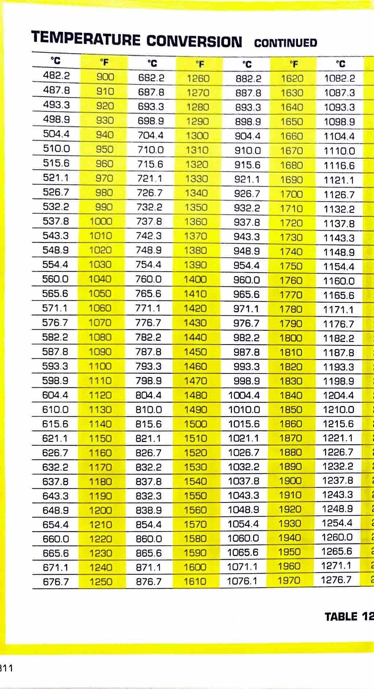
TEMPERATURE CONVERSION CONTINUED 482.2 487 8 493.3 498.9 504.4 510.0 515.6 521.1 526.7 532.2 537.8 543.3 548.9 554.4 560.0 565.6 571.1 576 7 582.2 587 8 5938 598.9 604 4 6100 615.6 621.1 626.7 632.2 637.8 643.3 648.9 654.4 660.0 665.6 671.1 676.7 OF 900 910 920 930 950 960 970 980 990 1000 1010 1020 1030 1040 1050 1060 1070 1080 1090 1100 1110 1120 1130 1140 1150 1160 1170 1180 1190 1200 1210 1220 1230 1240 1250 682.2 687 A 693 A 698 g 7100 7156 721 1 7267 732.2 737 8 742 3 748.9 754.4 760 0 765.6 771.1 776.7 782.2 787.8 793.3 798.9 810.0 815.6 821.1 826.7 832.2 837.8 832.3 838.9 854.4 860.0 865.6 871.1 876.7 OF 1260 1270 1280 1290 1300 1310 1320 1330 1340 1350 1360 1370 1380 1390 1400 1410 1420 1430 1440 1450 1460 1470 1480 1490 1500 1510 1520 1530 1540 1550 1560 1570 1580 1590 1600 1610 882.2 8878 693 n 898.9 904 4 9100 921.1 926.7 932.2 937.8 943.3 948.9 954.4 960.0 965.6 971.1 976.7 982.2 987.8 993.3 998.9 Ima .4 1010.0 1015.6 1021.1 1026.7 1032.2 1037.8 1043.3 1048.9 1054.4 1060.0 1065.6 1071.1 1076.1 OF 1620 1630 1640 1650 1660 1670 1680 1690 1700 1710 1720 1730 1740 1750 1760 1770 1780 1790 1800 1810 1820 1830 1840 1850 1860 1870 1880 1890 1900 1910 1920 1930 1940 1950 1960 1970 10822 1087.3 1093.3 1104.4 11100 1116.6 1121.1 1126.7 1132.2 1 137.8 1 143.3 1148.9 1 154.4 1160.0 1165.6 1171.1 1176.7 1182.2 1187.8 1193.3 1198.9 1204.4 1210.0 1215.6 1221.1 1226.7 1232.2 1237.8 1243.3 1248.9 1254.4 1260.0 1265.6 1271.1 1276.7 TABLE 12
Page 322
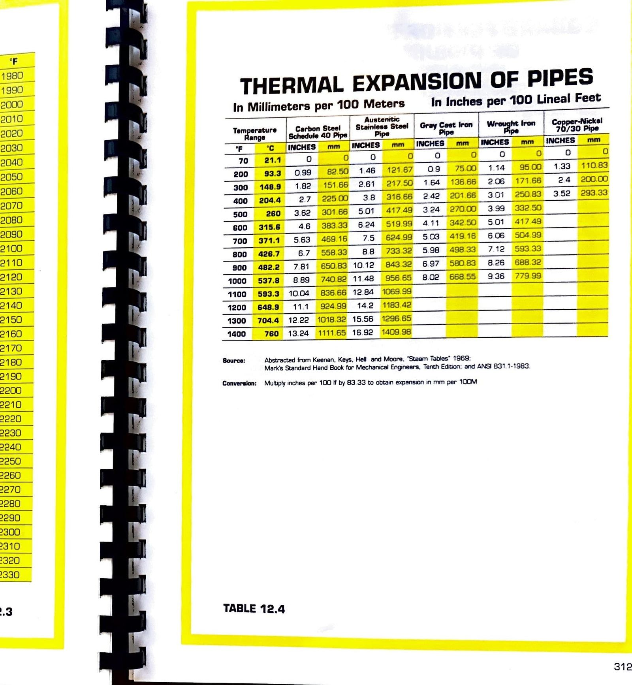
1980 1 ggo 2000 2010 2020 2030 2040 2050 2060 2070 2080 090 100 110 120 130 140 150 160 170 2180 2190 2200 2210 2220 Q40 '250 260 270 280 290 300 310 320 330 THERMAL EXPANSION OF PIPES In Millimeters per 100 Meters In Inches per 100 Lineal Feet Tem •nge Carbon Steel Stainle•• Seed •I INCHES mm INCHES mm INCHES mm NCHES mm INCHES mm 70 200 300 400 500 600 700 800 goo 1000 1100 1200 1300 1400 •c 21.1 93.3 148.9 204.4 ego 315.6 371.1 426.7 482.2 537.8 593.3 648.9 704.4 760 o 099 1 82 27 362 46 67 781 B 89 1004 11.1 12 22 13.24 o 82 50 151 66 o 1 46 2.61 38 501 6 24 76 88 o 121 67 217 50 31666 417 49 51999 624 99 733 32 32 956 65 1069 99 1183 42 1296 65 1409 98 o 09 2 42 3 24 411 5 03 5 98 6 97 B 02 o 75 13666 201 66 270 00 342 419 16 498 33 580 Ba 668 55 o 1 14 2 06 301 3 99 501 6 06 712 8 26 9 36 o 95 cn 171 66 250 83 332 50 417 49 504 99 593 33 688 32 779 99 o 1 33 24 3 52 225 00 301 66 383 33 469 16 558 33 650 83 740 82 83666 924 99 1018 32 10 12 1148 1284 142 15.56 1692 Abstracted from Keenan.
Ke•ß.
ard P&re.
1969: MarkÉ Hand Terü 8311-1983 CMverün: nches per 100 by 83 33 expmsM rtm pe TABLE 12.4 o 11083 20000 293.33 31
Page 323
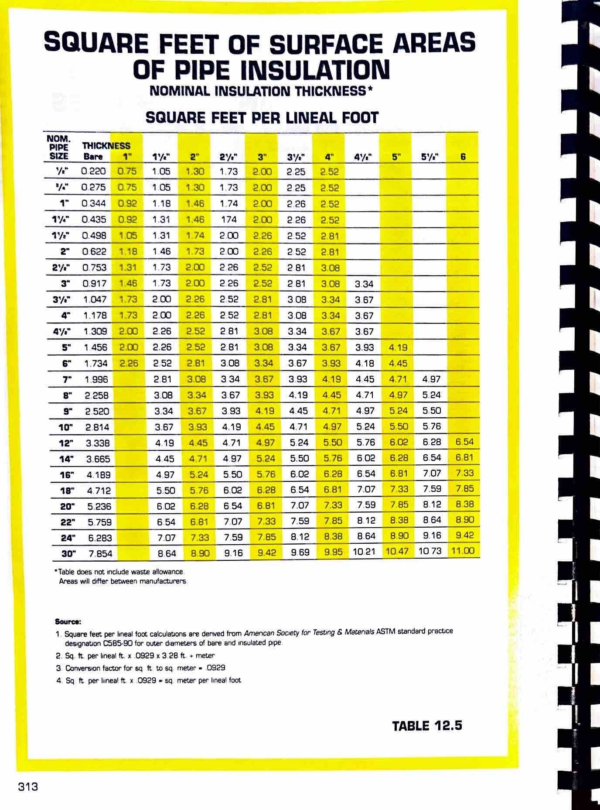
SQUARE FEET OF SURFACE AREAS OF PIPE INSULATION NOMINAL INSULATION THICKNESS* SQUARE FEET PER LINEAL FOOT NOM.
PIPE SIZE 22" THICKNESS 0 220 0275 0 435 0 622 0 753 0917 1 047 1.178 1 309 1 456 1.734 1 996 2 258 2 520 2 814 a 33B 3865 4 189 4 712 5 236 5 759 6.283 7854 075 05 1.31 173 1.73 200 2.00 2 26 1 05 1 05 1 18 1 31 1 31 1 46 1 73 1 73 2 oo 2 26 2.26 2 52 281 3 08 3 34 35 419 4 45 4 97 5 50 6 02 6 54 7 07 8 64 1.30 1 30 1.46 I .46 2 00 200 226 2 26 262 252 281 a 34 367 3 93 4 45 4.71 524 5 76 628 7.33 B 90 1 73 1 73 1 74 174 2 00 2 26 226 252 2 52 281 281 308 a 34 3 67 a 93 4.19 471 4 97 5 50 6 02 6 54 7 07 7 59 916 e 00 2 00 200 2 00 226 226 252 262 281 281 3 08 308 334 3 67 3.93 445 487 5.24 576 6.2B 681 7.33 785 g 42 aye" .e 25 2 25 226 2 26 2 52 2 52 281 281 a 08 3 08 3 34 3 34 a 67 3 93 4.19 4 45 4.71 5 24 5.50 602 6 54 7.07 7.59 B 12 g 69 4" 252 2 52 262 281 281 308 a 34 334 367 387 3 93 4.19 4 45 471 4.97 550 576 6 81 7.33 7 85 808 9 95 41/2" a 34 a 67 367 3 67 3.93 4.18 4 45 4.71 4.97 5 24 576 6 02 6 54 7.07 7 59 812 8 64 10 21 5" 4.19 4.45 471 5 24 580 602 628 681 7.33 7 85 a 38 B 90 1047 4 97 5 24 5 50 5 76 6 28 6 54 7 07 7.59 812 8 64 916 10 73 664 681 783 785 808 880 g 42 1100 •Table does not include waste allowance wtll Offer between manufacturers 1.
Square feet per lineal foot calculabons are demved from Amencan Society for Testing Matenals ASTM standard pracvce designaüon CSB5-90 for outer diameters of bare and Insulated pjpe 2.
sq ft.
x 0929 x a 28 ft, + meter a Converston factor for sq ft to sq meter • 0929 4.
Sq ft per lonea' t, x 0929 • sq meter per lineal foot TABLE 12.5 313
Page 324
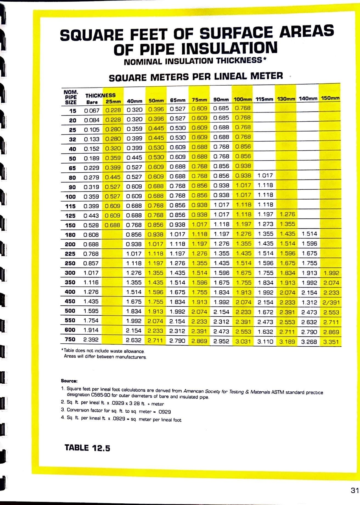
SQUARE FEET OF SURFACE AREAS OF PIPE INSULATION NOMINAL INSULATION THICKNESS* SQUARE METERS PER LINEAL METER NOM.
PIPE SIZE 15 20 25 32 40 50 65 80 so 100 115 125 150 180 200 225 250 300 350 400 450 500 550 soo 750 THICKNESS 40mm 0 320 0 320 0 359 0 399 0 399 0445 0 527 0627 0 609 0 609 0 688 0 688 0 768 0 856 0 938 1 017 111B 1 276 1 355 I 514 1 675 1 834 1 992 2 154 2 632 50mm 0096 0396 0445 0445 0.530 0630 0 609 0809 o.
688 0888 0 768 o.
768 0856 083B 1017 1 11B 1 197 1 355 1.
1 1755 1 913 2074 2233 2711 65mm 0 527 0 527 0 530 0 530 0 609 0 609 0 688 0 688 0 768 0 76B 0 856 0 856 0 938 1 017 1 118 1 197 1 276 1 435 1 514 1 675 1 834 1.992 2 154 2312 2790 7 Smm 0 609 0 609 OG09 0 609 0 688 0 888 o.
768 o.
768 0 856 0 856 0 93B 093B 1 017 IMIB 1M97 1276 1 355 1 514 1 596 1 1 913 2.074 2 233 2891 2869 SOmm 0 685 0 685 0 688 0 688 0 768 0 768 0 856 0 856 0 938 1 017 1 017 1118 1 197 1 276 1 355 1 435 1 596 1 675 1 834 1 992 2 154 2312 2 473 2 952 100mm IISmm 130mm 140mm Bare 0067 0 084 0105 0 133 0.152 0 189 0229 0 279 0319 0 359 O agg 0 443 OE2B 0 608 0 68B 0 768 0 857 1 017 IMIS 1.276 1 435 1 595 1754 1.914 2 392 25mm 0228 0228 0280 0 280 0820 0059 0899 0445 0627 0.527 0609 0 609 0688 0768 0 768 0 768 0 768 0 856 0 856 0838 0938 1 017 1017 1.11B 1M97 1 276 1 355 1.
514 1 1 1.
1 913 2 074 2 553 3031 1 017 1 118 1 118 1 118 1 197 1 273 1 355 1 I 514 1 596 1 755 1 834 1 992 2154 1 672 2 473 1 632 3 MIO 1.276 1 355 1.
1.514 1.
1.675 1.
1 913 2.074 2233 2 391 2±53 2711 a.
189 1 514 1 596 1 675 1 755 1 913 1 992 2 154 1 312 2 473 2 632 2 790 3 268 150mm 1.992 2074 2233 2/391 2653 2711 2869 3 a51 *Table does not include waste allowance Areas Will dffer between manufacturers Source: 1.
Square feet per lineal foot calculations are demved from Arnertcan Society for resong & Matena/s ASTM standard practtce des•gnataon C585-90 for outer diameters ot bare and nsulated ptpe, 2.
Sq ft, per lineal ft.
x 0929 x 3 28 tt + meter 3, Convers•on factor for sq ft.
to sq meter • 0929 4.
Sq ft.
per lineal ft.
0929 sq meter per "neal foot TABLE 12.5 31
Page 325
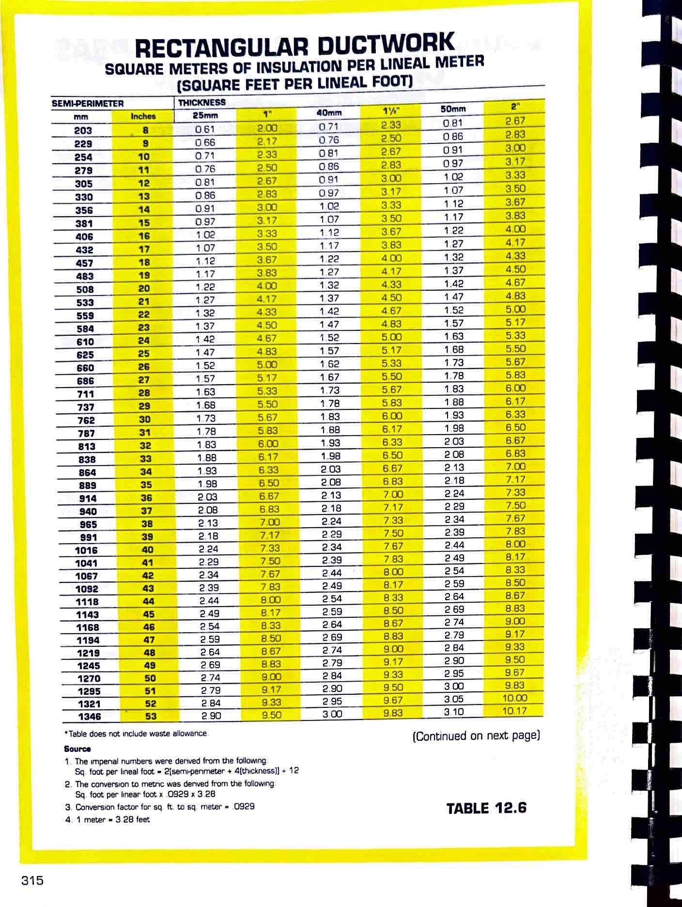
RECTANGULAR DUCTWORK SQUARE METERS OF INSULATION PER LINEAL METER (SQUARE FEET PER LINEAL FOOT) SEMI-PERIMETER mm 203 229 254 279 305 330 3SG 381 aos 432 457 508 533 sss 584 610 625 660 EBE 711 737 762 787 813 83B 864 BBS 914 940 sss 1016 1041 1067 1092 1118 1143 1168 1194 121S 1245 1270 1295 1321 1346 10 11 12 13 16 17 18 22 27 28 30 32 as 37 47 49 so 51 52 THICKNESS 2Smm 061 0 66 071 0 76 081 0 86 091 097 102 | 07 1 12 117 1 22 1 27 1 32 1 37 1 42 1 47 1 52 1 57 1 63 1 73 1 78 1 83 1 88 1 98 2 03 208 213 21B 2 24 2 29 234 2 39 2 44 2 49 2 54 2 59 2 64 2 69 2 74 279 2 84 2 90 200 2M7 233 267 2 83 300 a 33 a 50 367 383 4 00 4 33 4 50 4 67 4 83 500 5 17 583 5 50 567 6 33 6 50 6E7 7M7 7 33 7 50 7 67 7 83 817 B 33 867 883 900 9M7 g aa g 60 40mm 071 0 76 081 0 86 091 097 1 07 1 12 1 17 1 22 1 27 1 32 1 37 1 42 1 47 1 52 1 57 1 62 1 67 1 73 1 78 1 83 1 88 1 93 1 98 2 03 213 218 2 24 2 29 2 34 2 39 2 44 2 49 2 54 2 59 2 64 2 69 2 74 2 79 2 84 2 95 300 203 e 50 267 283 goo 317 3 33 3 50 367 38 00 4 17 403 4 50 467 4 83 5 oo 517 533 560 567 5 83 6M7 6 33 660 667 6 83 700 7 33 7 50 767 8 00 833 50 B 67 B 83 9 33 g 50 9.67 9.83 SOmm 081 0 86 0 97 1 02 1 07 1 12 1 17 1 22 1 27 1 32 1 37 1.42 1 47 1 52 1 57 1 63 1 6B 1 73 1 78 1 83 1 88 1 93 2 03 2 08 213 218 2 24 2 29 2 34 2 39 2.44 2 49 254 2 59 2 64 2 69 2 74 279 2 90 2 95 3 00 3 05 a 10 267 300 317 a 33 3 50 367 3.83 483 460 4E7 83 500 517 5 33 567 5 83 600 617 6 33 667 6 83 700 7 33 7.50 767 7 83 8 00 8M7 8 33 850 887 8 83 900 9M7 9 33 9 50 9 67 9.83 1000 10.17 • Table does not Include waste allowance 1.
The tmpemai numbers were derived from Vie followng toot per meal foot — 2[sern-penrneW' + + 12 2.
The converson to metnc was demved from followjng Sq foot per foot x 0929 x 328 a.
Converston factor for sq ft.
to sq.
meter 0929 4.
1 meter 3 2B feet 315 (Continued on next page) TABLE 12.6
Page 326
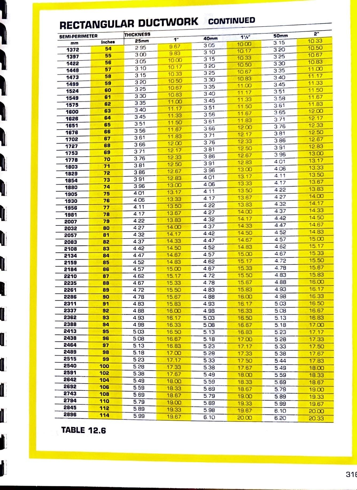
RECTANGULAR DUCTWORK CONTINUED SEMI-PERIMETER 1372 1397 1422 144B 1473 1499 1524 1549 1575 1600 1628 1651 1678 1702 1727 1753 1778 1803 1829 1854 1880 1905 1S30 195B 1981 2007 2032 2057 2083 2108 2134 2159 2184 2210 2235 2261 2286 2311 2337 ease 2388 2413 2438 2464 2489 2515 2540 2591 2642 2692 2743 2794 2845 2896 Inches 55 56 57 59 59 60 61 62 63 65 66 67 68 69 70 71 72 73 74 75 76 77 78 79 80 81 82 83 86 87 88 89 so 91 92 93 95 96 97 98 99 100 102 104 106 108 110 112 114 ICKNESS 25 mm 2 95 3 00 3 05 310 315 3 20 3 25 a 30 3 35 3 40 a 45 351 3 56 361 3 66 371 3 76 381 3 86 391 a 96 4 01 4 06 411 a 17 4 22 4 27 4 32 437 4 42 4 47 4 52 4 57 4 62 4 67 4 72 4 7B 4 83 4 88 4 93 4 98 513 5M8 5 23 5 28 5 38 5 49 5 59 5 69 5 79 5 89 5 99 967 9 83 1000 10 17 10 33 1050 1067 1083 11 m 1117 11 33 1150 11 67 1183 12T 12 17 1233 1250 12 67 1283 13 m 1317 1333 1350 13 67 1383 1400 1433 14 50 14 67 1483 1500 15 17 1533 1550 15 67 1583 160 1617 1603 1650 16 67 1683 1700 17M 1733 1767 1883 1B 67 1900 1933 1967 40mm 3 05 310 315 a 20 3 25 3 30 3 35 3 40 3 45 351 a 56 361 3 66 371 3 76 a 81 3 86 391 3 96 a 01 06 411 417 4 22 427 4 32 a 37 4 42 a 47 4 52 4 57 4 62 4 67 4 72 4 78 4 83 4 88 4 93 4 93 5 03 5 08 513 518 5 23 5 28 5 33 5 38 5 49 5 59 5 69 5 79 5 89 5 98 6.10 10 m 10 17 1033 10 50 10 67 1083 1100 11 17 1133 1150 11 67 1183 1200 12 17 1233 1250 12 67 1283 13 m 13 17 1333 1350 13 67 1383 14 17 1433 1450 14 67 1500 15 17 15 aa 1550 15 67 1583 16 m 16.33 1650 16 67 16 aa 17 m 17 n 1733 1750 17 67 IBCX) 1833 18 67 19m 19aa 19 67 20 SOmm 315 3 20 3 25 3 30 335 3 40 3 45 351 58 361 3 65 371 3 76 381 3 86 a 91 3 96 401 4 06 411 a 17 4 22 4 27 4 32 437 4 42 a 47 4 52 4 57 4 62 4 67 4.72 a.
78 83 4 88 4 93 5 08 5.13 518 s 23 5 28 5 33 5 38 5 44 5 59 5 69 579 5 89 5 99 6.10 620 TABLE 12.6 10 33 1080 10 67 1083 1100 11 17 11 33 1150 11 67 11 83 1200 12 17 12 33 1250 12 67 1283 1300 13M 13 aa 1350 13 67 1383 14 00 14.17 14 33 1450 14 67 1483 1500 15M 1533 15 so 15 67 1583 1600 16M 1603 1650 16 E?
1683 1700 17M 1 783 17 so 17 67 1783 1833 18 67 1900 1903 2000 20.33 31
Page 327
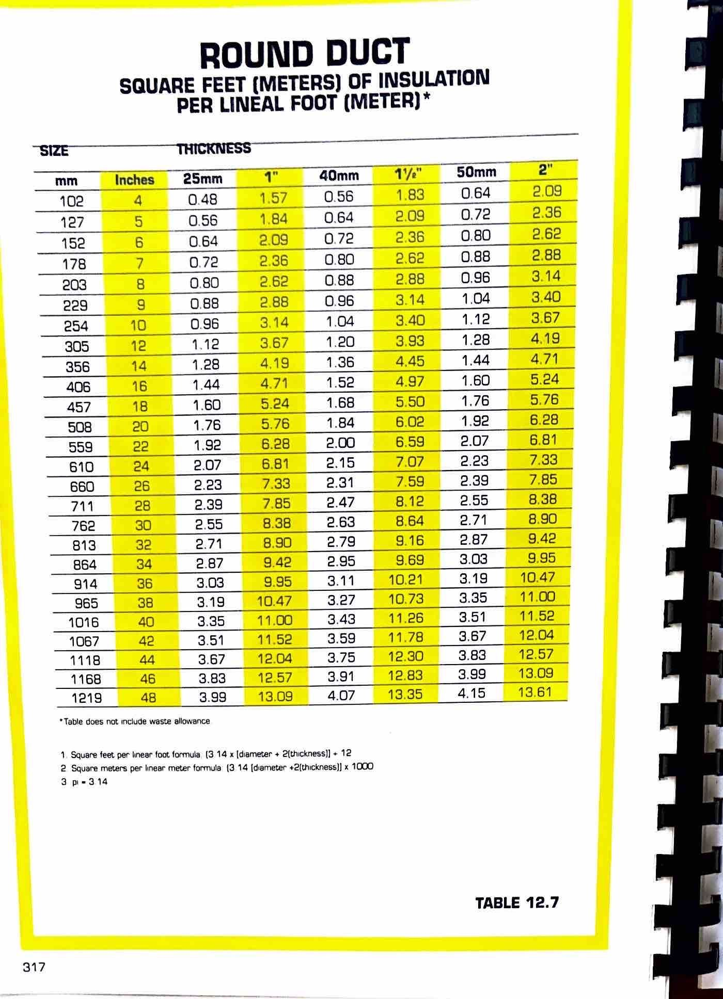
ROUND DUCT SQUARE FEET (METERS) OF INSULATION PER LINEAL FOOT mm 102 127 152 178 203 229 254 305 356 406 457 508 559 610 660 711 762 813 864 914 965 1016 1067 1118 1168 1219 Inches 10 12 14 16 18 20 22 24 26 28 32 34 36 42 46 48 25mm 048 056 OR4 072 0 80 0 88 oqs 112 1.28 1 44 1.60 1.76 1.92 2.07 2.23 2.39 2 55 2.71 2.87 3.03 3.19 3.35 3.51 3.67 3.83 3.99 19 IA4 236 2 62 2 88 3.14 4.19 4.71 524 5.76 6.2B 6.81 7.33 785 8.90 9.42 9.95 10.47 11.00 11.52 12.04 125 13.09 40mm 056 0.64 072 0 80 088 OQ6 1 04 1 20 1.36 1.52 1.68 1.84 2.00 2.15 2.31 2.47 2.63 2.79 2.95 3.11 3.27 3.43 3.59 3.75 3.91 4.07 1 yet' 1.83 2N6 2R2 2A8 3.14 4.45 4.97 550 602 659 707 759 8.12 8.64 1091 1073 11.26 1178 12.30 1283 13.35 50mm 0 64 0.72 ORO 0.88 1 04 112 1 28 1 44 1.60 1.76 1 92 2.07 2.23 2.39 2.55 2.71 2.87 3.03 3.19 3.35 3.51 3.67 3.83 3.99 4.15 2 09 286 2.62 288 3.14 3.40 3.67 4.19 4.71 5.24 5.76 6.28 6.81 7.33 9.42 985 10.47 11.00 11.52 12.04 12.57 13.09 13 d • Table does not Include waste allowance 1 h Square feet per linear toot formula (3 14 x (diameter + 12 2 Square meters per "near meter formula 13 14 [diameter x IOT a p, -a 14 317 TABLE 12.7
Page 328
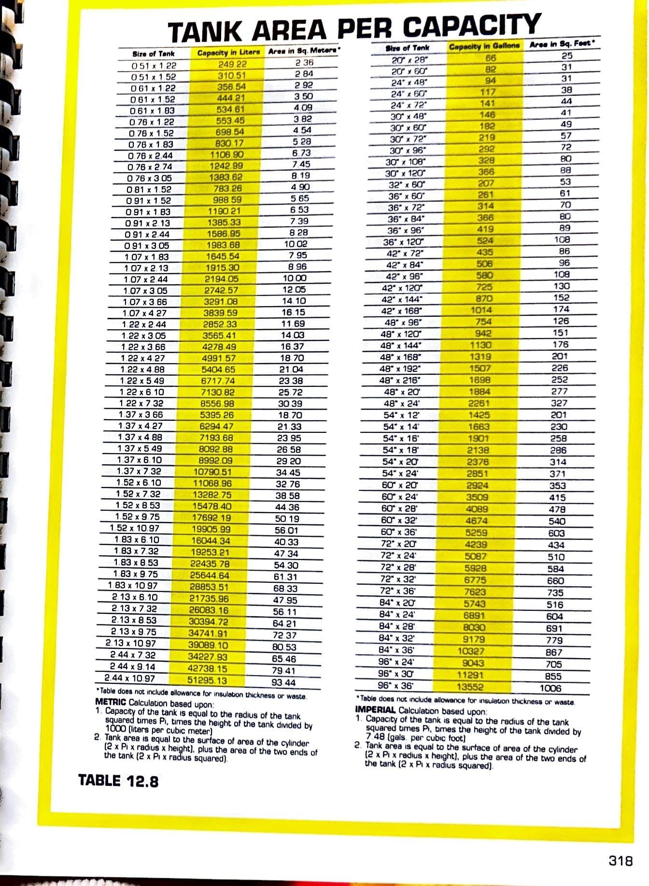
TANK AREA PER CAPACITY of T•nk Lit•r•• Are in Sq • 2 36 249 22 051 1 22 31051 534 61 553 45 630 17 0 76 x 2 44 0 76 1274 0 76 x 305 081 x 1 52 091 x 1 52 091 83 091 x 213 091 x 244 091 x 305 1 07 x 183 107x213 107 x 244 1 07 x 305 107 3 66 1 07 x 4 27 1 22 x 305 122 x 3 66 122 x427 1 22 x 4 8B 1 22 x 549 1 22x6 10 1 22 x 7 32 1 37 x 3 66 1 37 x427 1 37 x488 1 37 x 549 137x610 1 37 x 732 1 52 x 6 10 1 52 x 732 1 52 x B 53 1 52 x 9 75 1 52 10 97 1 83 10 1 83 7 32 1 83 e 53 1 83 9 75 1 83 x 1097 213x610 2 32 213x853 213 x 975 213 x 1097 2 44 x 7 32 244 x 14 244 x 1097 1106 1242 99 138362 783 26 988 59 119021 1385 33 158695 19836B 1645 54 1915 2194 05 2742 57 3291 3839 59 2852 33 3565 41 427B 49 4991 57 5404 65 6717 74 713082 8556 98 5395 26 6294 47 7193 6B 8092 88 8992 09 10790 51 11068 96 13282 75 1547B 40 17692 19 19905 99 16044 34 19253 21 22435 78 25644 64 28853 51 2173586 26083 16 30394 72 34741 91 39089 10 34227 93 42738 15 51295 13 7 45 8 19 4 90 5 65 6 53 7 39 B 28 1002 7 95 B 96 1000 1205 14 10 16 15 11 69 1403 16 37 1870 21 04 23 38 25 72 3039 1870 21 33 23 95 26 58 29 20 34 45 32 76 38 58 44 36 5019 56 01 40 33 47 34 54 30 61 31 68 33 47 95 56 11 6421 72 37 BO 53 65 46 79 41 93 44 3C , 'Off 3C 120* 36• 12C 4?
x 84- 120• 4?
168• 48- 120• ax x 144• x 168• 48• 216' 48• x 20 x 24 12 5a• x 14 18 54• x 20 54• x 24 SO- x 20 60- 28' 60• x 32 7?
x 20 7?
x 24 7?
x 28 72' 32 7?
x 36 x 24 84• x 28 84• x 32 B4• x 36 96• 24 x 30 261 314 419 524 870 1014 1130 1319 1698 1884 2261 taes 1663 1901 2138 2376 2BS1 2924 4674 5259 5928 6775 7623 5743 6891 9179 10327 11291 13552 25 31 53 61 108 86 108 130 152 174 126 151 176 201 226 252 277 327 201 230 25B 314 371 353 415 47B 510 584 735 516 691 779 867 855 • Table does '(Elude allowance insul&on üwkness waste METRIC Calculauon based upon I Capacity of the tank IS equal to the radius of the tank uared times Pl.
times the height of tank dMded by 1 (liters per cubic meter) 2.
Tank area •s equal to the surface of area ot cylinder (2 x Pi x radius x height).
plus the area of the two ends ot the tank (2 x P' x radius squared).
TABLE 12.8 • Table does tu• thckness IMPERIAL Calculauon based upon 1 , Capacity ot the tank IS equal to radius of the tank squared umes P'.
the hejghC of the tank draded by 7 4B (gals per cubic 2, Tank area equal to the surface ot ot tte cylinder (2 x Pi x radius x height).
plus trie area of the ends of the tank (2 x P' x radius squared), 318
Page 329
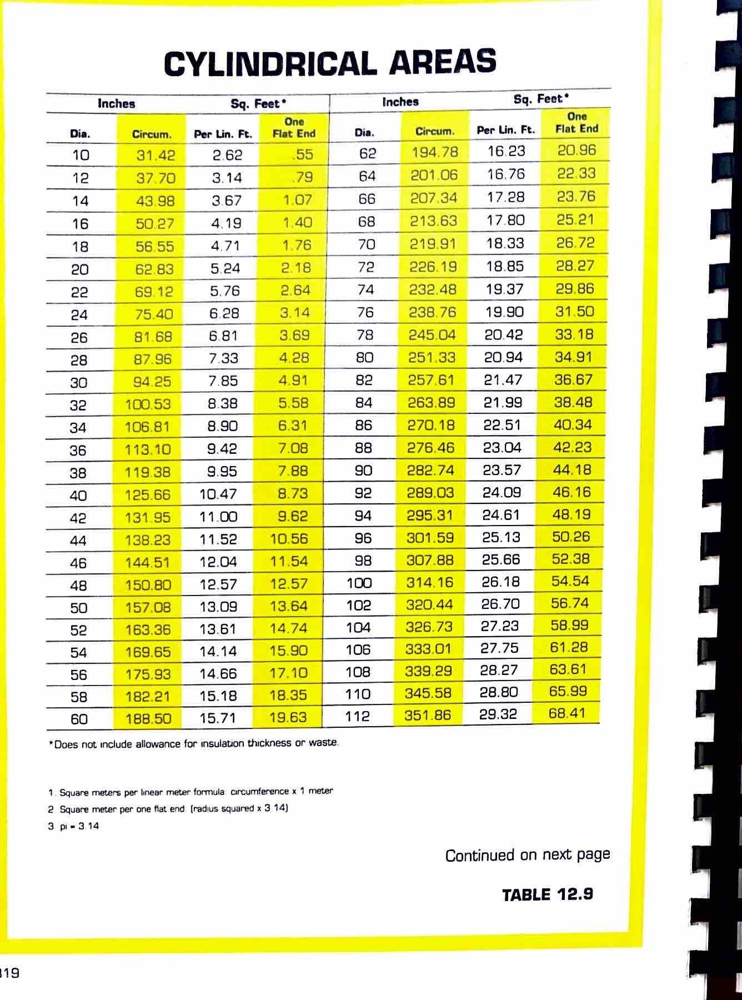
CYLINDRICAL AREAS Inches Circum.
31.42 37 70 43 98 5027 56 55 62 83 69 12 7540 81 68 87 s 94 25 100 53 10681 113 MO 119 38 125 66 131 95 13B 23 144.51 150.80 1570B 163.36 169.65 175 g 182.21 18860 sq.
Feet• Per Lin.
Ft.
Flat End Inches Circum.
1 94, 78 201 06 20704 21383 219M 226M9 232 48 238 76 245 04 251.33 25781 26389 270.18 27646 282.74 289.03 29581 301.59 30788 314M6 326.73 333 01 33929 345.5B 351.86 sq.
Feet• Dia.
10 12 14 16 18 20 22 24 26 28 30 32 34 36 38 40 42 44 46 48 52 56 58 60 2 62 a 67 4 19 4 71 5 24 5.76 6 28 681 703 7 85 8 38 8.90 9.42 g 95 10 47 1100 11.52 12.04 12.57 13.09 13 El 14.14 14.66 15.18 15.71 .55 .79 1 07 1 40 1 76 218 2.64 3.14 3 69 4 28 421 568 681 708 788 B.
73 11 54 12.57 13.64 14.74 1580 17.10 18.35 19E3 Dia.
62 64 66 68 70 72 74 76 78 80 82 84 86 88 go 92 94 96 9B 1 oo 102 104 106 108 110 112 Per Lin.
Ft.
16 23 16.76 17 a 17 go 18.33 18 85 19 37 19 90 20 42 20 94 21.47 21.99 22.51 23.04 23.57 24 og 24.61 25.13 25.66 26.18 26.70 27.23 27.75 28.27 28.80 29.32 Flat End 2086 22 33 2376 25 21 2672 2827 2986 31 50 33 18 3481 36E7 3848 40.34 42.23 44.18 46.16 48.19 50.26 52Z8 54.54 56.74 58.99 61.28 63.61 65.99 68 41 'Does not •nclude allowance for tnsulauon üuckness or waste 1 Square rneter•s per linear meter forrnula carcumference x I rnet.er 2 Square meter per one flat end (radius squared x 3 14) 3 14 119 Continued on next page TABLE 12.9
Page 330
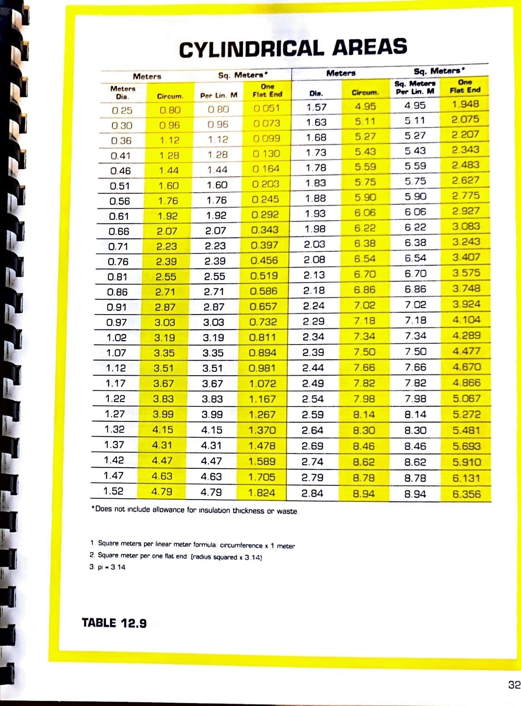
CYLINDRICAL AREAS Meters Sq.
Meters • Sq.
Meters • Sq.
Meters Dia 025 0 30 0 36 041 046 0.51 0.56 0.61 0.66 o.
71 0.76 081 0.86 0.91 0.97 1.02 1.07 1.12 1.17 1.22 27 1 32 1.37 1.42 1 47 1 52 Circum.
0 80 0 96 1 12 1 44 1 60 1 76 1 92 2 07 2.23 2.39 2.55 2.71 2.87 303 3.19 385 3.51 3.67 383 4.15 481 4.47 4 63 4.79 Per Lin, M o ao 0 96 112 1 28 1 44 1 60 1 76 1 92 2.07 2.23 2.39 2.55 2.71 2.87 3.03 3.19 3.35 3.51 3.67 3.83 3.99 4.15 4.31 4.47 4.63 4.79 End 0 051 0 073 0 099 0 130 0164 0 203 0 245 0 292 0897 0456 0.519 0686 0657 o.
732 0894 ogl 1.072 1.167 1.267 1.370 1.478 1 589 1.705 1 824 1 63 1 68 1 73 1 78 1 83 1 88 1 93 1 98 2.03 2 08 2.13 2M8 2.24 2 29 284 2.39 2.44 2.49 2 54 2.59 2.64 2.69 2.74 2.79 2.84 4 95 5 27 5 43 5 59 5 75 5 90 6 06 6 22 6 38 6 54 6 70 6 86 7 02 718 784 7 so 7 82 7 98 8.14 846 8.62 878 8.94 Per L"l.
M a 95 511 5 27 s 43 5 59 5 75 5 90 6 06 6 22 6 38 6 70 7 02 7.34 7 50 7 66 7 82 8.14 8.30 8.46 8.62 8.78 884 *Does not include allowance for Insulation thickness or waste 1 Square meters linear meter formula Circumference x 1 meter 2.
Square meter per one flat end (radius squared x TABLE 12.9 End 1 948 2 075 2 207 2483 2 627 2 775 2 927 3 083 3 243 3 407 3 575 3 748 3 924 4.104 4.289 4477 4.670 4 866 5067 5272 5.481 5E93 5.910 6.131 6.356 32
Page 331
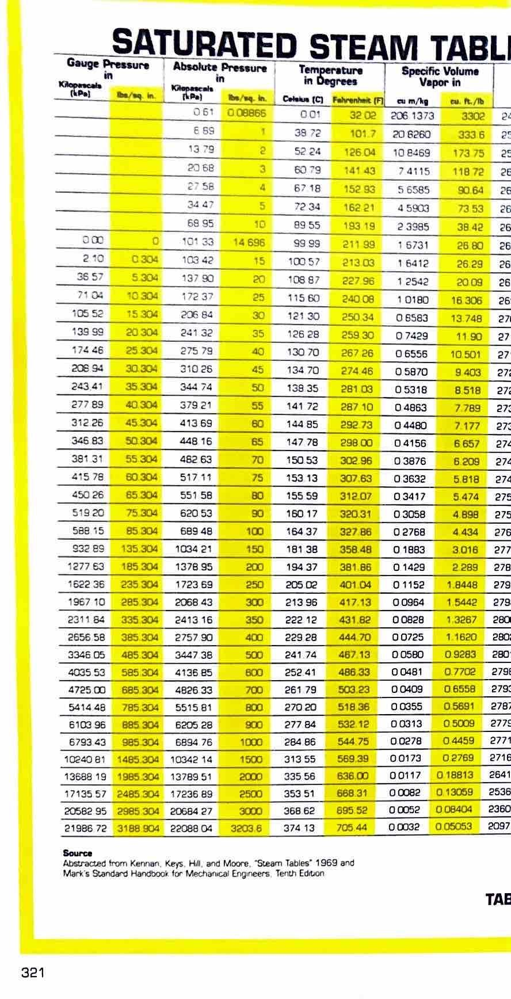
SATURATED STEAM TABLI Gauge Absolute in Specific Volume 04 tosse 243 41 277 eg 31226 345 83 381 31 78 aso 26 st920 sae 1277 sa '622 36 1967 10 2311 84 2656 58 3346 05 4725 00 5414 4B 6103 96 6793 43 10240 13688 19 17135 57 20582 95 21936 72 C 2S 304 35 40 45 65 BS 04 135 304 304 235 285 304 33S 304 385 3u 485 304 585 04 685 785 304 as 304 gas 34 2485 304 2985 3188 904 0 61 20 58 33 103 137 go 37 206 241 32 275 79 310 26 344 74 379 21 413 sg 44B 16 482 63 51711 5S15E 620 53 egg 4B 1034 21 137B 95 1723 sg 43 2413 16 2757 90 34-47 3B 4136 85 4826 33 5515 81 6205 28 6894 76 10342 14 13789 51 17236 89 20684 27 2208B 04 01B66 e 3 5 '4696 20 25 30 35 45 so 55 70 BO 90 150 700 15T esm 3203 6 tCl 38 52 60 67 18 72 89 55 1m 57 IOS 87 11560 12130 126 2B 130 70 134 70 138 3S 141 72 85 147 78 15053 153 13 155 59 160 17 37 181 3B 37 205 02 213 96 222 12 229 28 241 74 252 41 261 79 270 20 277 Ba 284 86 31355 335 56 353 51 368 62 374 13 32 02 101 7 126 oa 43 152 93 162 193 19 21' 99 227 240 08 250 34 259 30 267 26 274 46 2B' 03 287 10 292 73 29B 96 307 sa 31207 320a1 327 358 48 381 86 401 04 417 & 431 82 444 70 486a3 50323 51836 532 12 544 75 56939 636 m 668 31 695 52 705 44 206 1373 20 6260 10 74115 5 6585 a 59&3 2 3985 6731 ' 8412 1 2542 1 0180 O ES83 0 7429 0 6555 0 5870 0 5318 0 4863 0 4480 04156 0 3876 0 3632 03417 0 3058 0 2768 01983 0 1429 01152 0 0828 0 0725 O OSBO 0 0481 0 0409 0 0355 00313 00278 00173 00117 0 0082 O T52 3302 333 6 17375 11B 72 90 64 73 53 38 42 26 BO 26 29 20 09 16306 13 748 II 90 10 501 9 B 518 7 789 7177 6657 6 209 5 BIB S 474 4 89B 4 434 3016 2 289 18448 1 5442 10267 1 1620 0 9283 07702 0 655B 05691 0 4459 0 2769 0 18813 0 13039 0 08404 0 05053 AbsTacted from Kennan.
Hill.
and Mocye, •Steam Tables' 1969 and 26 26 26 26 26 26 271 27 27 27: 27: 27Z 274 275 276 277 27B 279 279 280 280 280 279t 279: 27B; 277S 2771 2716 2641 2536 2360 2097 TAE Mark's Standard Hand-bw\ for Mechanical Engineers Tenth EdLon 321
Page 332
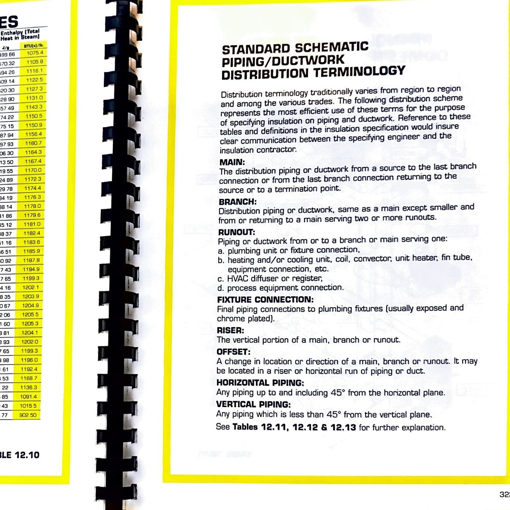
Enth.lpv (Total Heat 199 66 i7032 26 i20 30 28 90 57 49 22 75 15 87 94 9793 30 1350 19 55 24 89 78 34 19 38 14 11 86 1512 1B 37 il 16 6 51 0 92 7 43 7 65 4 16 8 35 067 206 1 60 381 393 65 161 i 53 æ , 85 , 43 77 1075 a 1105B 11161 '122 5 11273 11310 11433 11505 11509 11564 11607 11643 11674 11700 11723 11744 11763 11780 11796 11810 11824 11836 11859 1187 B 11949 11993 1202 1 1203 9 12049 12055 12053 1204 1 12020 11993 11960 1192 a 11687 11363 1091 4 1015 5 902 50 ELE 12.10 STANDARD SCHEMATIC PIPING/DUCTWORK DISTRIBUTION TERMINOLOGY Distribution terminology traditionally varies from region to region and among the vamous trades.
The followtng distribution scheme represents the most efficient use of these terms for the purpose of specifying insulation on piping and ducbwork.
Reference to these tables and definitions in the insulation specification would insure clear communication between the speciyng engineer and the insulation contractor.
MAIN: The distribution piping or ductwork from a source to the last branch connection or from the last branch connecaon returning to the source or to a termination point.
BRANCH: Distribution piping or ducbuork, same as a main except smaller and from or returning to a main serving two or more runouts.
RUNOUT: Piping or ductwork from or to a branch or main serving one: a.
plumbing unit or fixture connection, b.
heating and/or cooling unit, coil, convector, unit heater, fin tube.
equipment connection, etc.
c.
HVAC diffuser or register, d.
process equipment connection.
FIXTURE CONNECTION: Final piping connections to plumbing fixtures (usually exposed and chrome plated).
RISER: The vertical portion of a main, branch or runout.
OFFSET: A change in location or direction of a main.
branch or runout.
It may be located in a riser or horizontal run of piping or duct.
HORIZONTAL PIPING: Any piping up to and including 450 from the horizontal plane.
VERTICAL PIPING: Any piping which is less than 450 from the vertical plane.
See Tables 12.11, 12.12 & 12.13 for further explanation.
32
Page 333
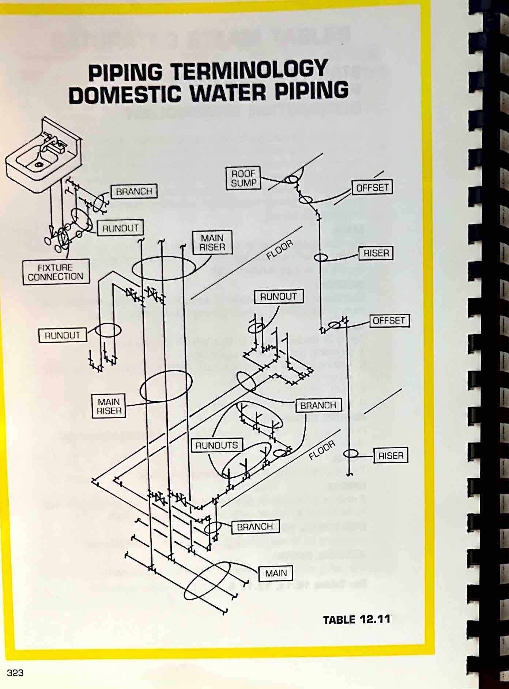
PIPING TERMINOLOGY DOMESTIC WATER PIPING FIXTURE CONNECTION RUNOUT JNOIJT MAIN RISER MAIN RISER RUNOUTS ROOF SUMp RUNOUT BRANCH OFFSET RISER OFFSET RISER BRANCH MAIN TABLE 12.11 323
Page 334
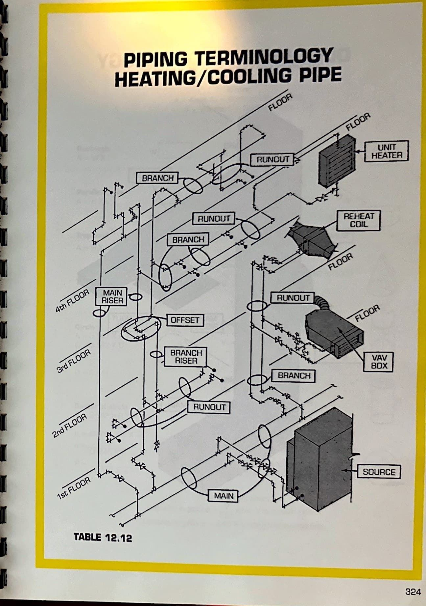
PIPING TERMINOLOGY HEATING/COOLING PIPE RUNOUT UNrr HEATER MAIN VOO+ VOO+ VOO+ TABLE 12.12 BRANCH RUNOUT BRANCH OFFSET BRANCH RISER RUNOUT MAIN RUNOUT BRANCH REHEAT COIL VAV BOX SOURCE 324
Page 335
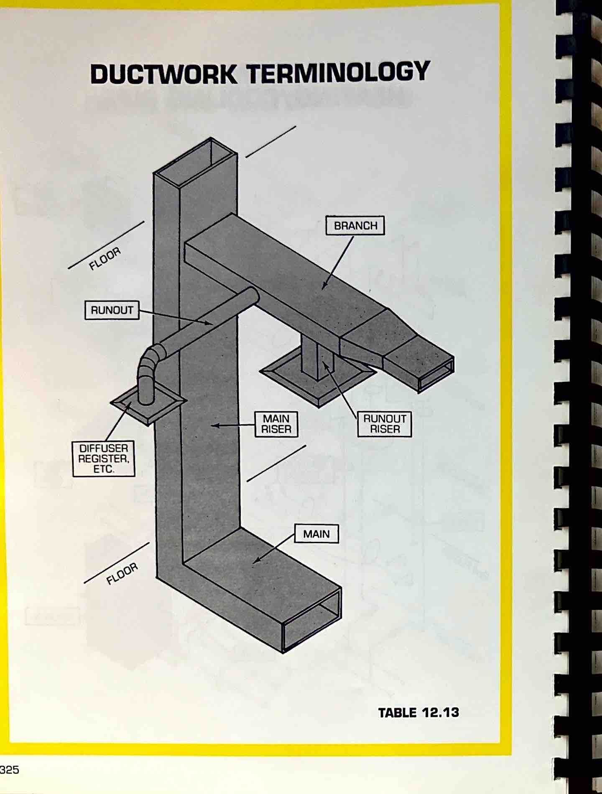
DUCTWORK TERMINOLOGY RUNOUT MAIN RISER DIFFUSER REGISTER.
ETC.
BRANCH RUNOUT RISER MAIN TABLE 12.13 325
Page 336
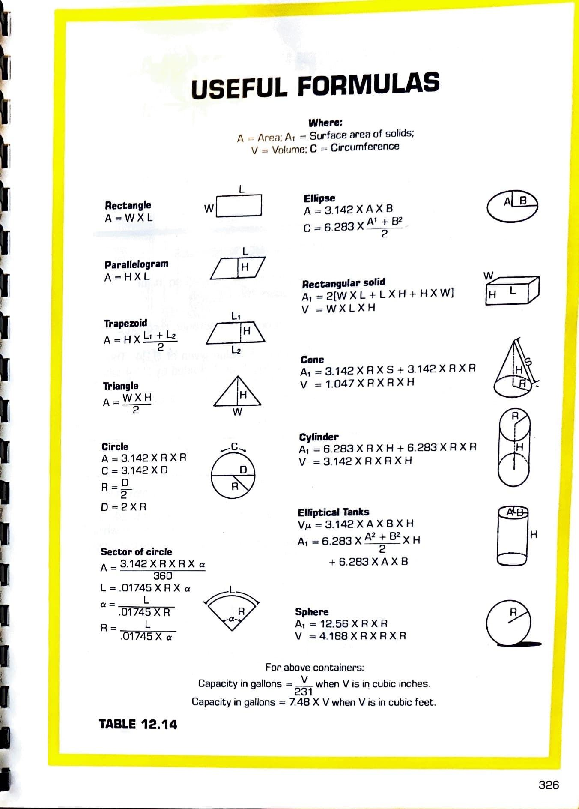
USEFUL FORMULAS Where: A — Area; Ai Surface area of solids: V = Volume: C Circumference Rectangle A-WXL Parallelogram A -H XL Trapezoid Triangle W XH 2 Circle A = 3.142 XRXR C = 3.142 XD Sector of circle w L2 w Ellipse A 3.142 X AX B A1 + 32 c 6 283 x Rectangular solid Cone Al = 3.142 X RX S + a.142XRXR V -1047 X RX RX H Cylinder Al = 6.283 X RX H + 6.283 X RX R V = 3.142 XRXRXH Elliptical Tanks Vg-3.142XAXBXH AI = 6.283 Sphere A1 = 12.56 X RX R For above containers: w A -3.142XRXRXa 360 L = .01745XRXa .01745XR 01745 X a Capacity in gallons = when V is in cubic inches.
231 Capacity in gallons = 7.48 X V when V IS in cubic feet.
TABLE 12.14 326
Page 337
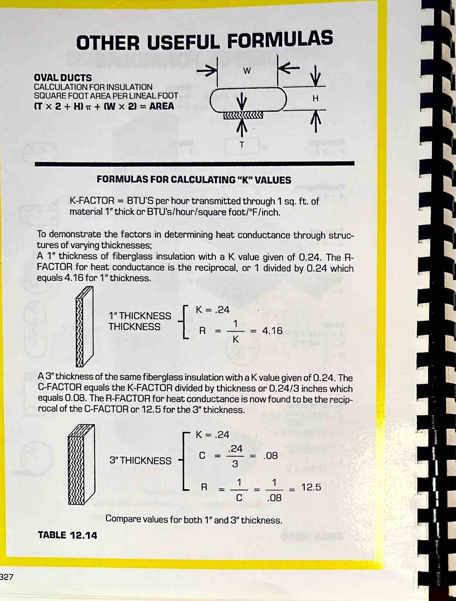
OTHER USEFUL FORMULAS w OVAL DUCTS CALCULATION FOR INSULATION SQUARE FOOT AREA PER LINEAL FOOT (Tx 2 + + (W x 2) = AREA FORMULAS FOR CALCULATING "K" VALUES K-FACTOR = BTU'S per hour transmitted through 1 sq.
ft.
of material 1 " thick or BTU's/hour/square foot/0F/inch.
To demonstrate the factors In determining heat conductance through struc- tures of varying thicknesses; A I" thickness of fiberglass insulation with a K value given of 0.24.
The R- FACTOR for heat conductance is the reciprocal, or 1 divided by 0.24 which equals 4.16 for I " thickness.
1" THICKNESS THICKNESS K = .24 K = .24 1 = 4.16 A 3" thickness of the same fiberglass insulation with a K value given of O.
24.
The C-FACTOR equals the K-FACTOR divided by thickness or 0.24/8 inches which equals 0.08.
The R-FACTOR for heat conductance is now found to be the recip- rocal of the C-FACTOR or 12.5 for the 3" thickness.
c 3"THlCKNESS .24 1 c .08 1 12.5 .08 Compare values for both 1" and 3" thickness.
TABLE 12.14 327
Page 338
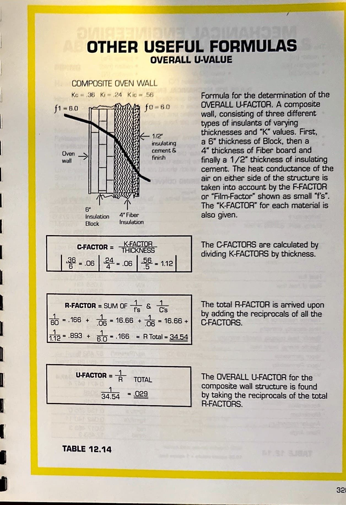
OTHER USEFUL FORMULAS OVERALL U-VALUE COMPOSITE OVEN WALL Kc=36 f1 -60 oven wall fo-60 insulating cement & fintr,h Insulation Block C-FACTOR = = .06 44 = 6 A-FACTOR = SUM OF 4" Fiber Insulation K-FACTOR THICKNESS .06 = 1.12 .5 60 = .06 f's - 16.66 + —L 16.66 + 112 =.B93 + & 6 0-.166 = RT0tal-a4.54 U.FACTOR = & R 34.54 TABLE 12.14 TOTAL .029 Formula for the determination of the OVERALL LI-FACTOR.
A composite wall, consisting of three different types of insulants of varying thicknesses and "K" values.
first, a 6" thickness of Block, then a 4" thickness of Fiber board and finally a 1/2" thickness of insulating cement.
The heat conductance of the air on either side of the structure is taken into account by the F-FACTOR or "Film-Factor" shown as small "f's".
The "K-FACTOR" for each material is also given.
The C-FACTORS are calculated by dividing KFACTORS by thickness.
The total R-FACTOR is arrived upon by adding the reciprocals of all the CFACTORS.
The OVERALL LI-FACTOR for the composite wall structure is found by taking the reciprocals of the total R-FACTORS.
321
Page 339
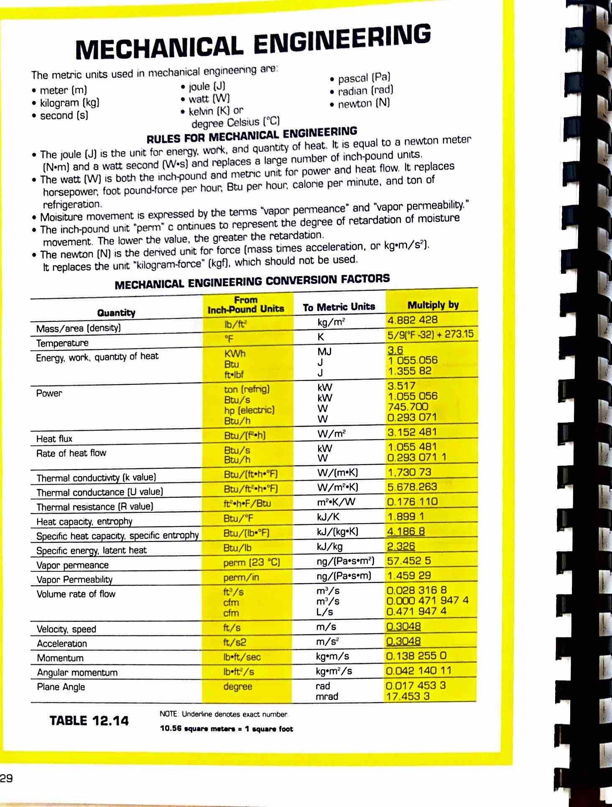
MECHANICAL ENGINEERING The metric units used In mechanical engineenng are • meter (m) • kilogram (kg) • second (s) • pule (J) • watt (W) • ketvnn (K) or degree Celsius (oc) • pascal (Pa) • radian trad) • newton (N) RULES FOR MECHANICAL ENGINEERING • The Joule (J) is the unt for energy.
work, and quantity of heat.
It is equal to a newton meter (N•m) and a watt second (W•s) and replaces a large number of inch-pound units.
• The watt (W) IS both the Inch-pound and metrtc unt for power and heat flow.
It replaces horsepower, foot pound-force per hour.
Btu per hour, calorte per minute.
and ton of refrigeration.
• Moismre movement ts expressed by the terms "vapor permeance" and "vapor permeability." • The inch-pound unt •perm' c onunues to represent the degree of retardation of moisture movement.
The lower the value.
the greater the retardation.
• The newton (N) IS the dertved unt for force (mass tmes acceleration.
or kg•m/s2) It replaces the unt "kilogram-force" (kgf), which should not be used.
MECHANICAL ENGINEERING CONVERSION FACTORS Quantity Mass/area (densty) Temperature Energy.
work.
quantity of heat Power Heat flux Rate of heat now Thermal conductrvq (k value) Thermal condutnnce (U value) Thermal resistance (R value) Heat capacrty.
entrophy Specific heat capagty.
entrophy Specific energy.
latmt heat Inch-Pound Units To Metric Units Multiply by Vapor permeance Vapor Permeability Volume rate of flow Velocity, speed Accelerauon Momentum An ular momentum Plane Angle TABLE 12.14 lb/ft' ft•lbf (refmg) Btu/s hp (eie&ic) Btu/h Btu/s Btu/h fta.h.F/Btu Btu/0F perm (23 'C) perm/in ft'/s ft/s ft/s2 lb•ft/sec kg/m2 kW kW w w W/m2 kW w W/(m.K) W/m2•K) kJ/K kJ/kg ng/(Pa•s•m) m3/s mus L/s m/s m/se kg•m/s kg•m2/s mrad 4882 428 5/9(0F .32) + 273"5 1 055 056 1.355 82 357 1.055 056 745.700 0 293 071 a.
152 481 1 055 481 0 293 071 1 1.730 73 5 678263 o M76 110 1899 1 4-1.RQß 57452 5 1 459 29 002B 316 8 0000 471 947 4 0471 947 4 o.
138 255 0 0042 140 11 0 017 453 3 17.453 3 tWTE Undedr.e exact number 10.56 •quan metro • I squam foot
Page 340
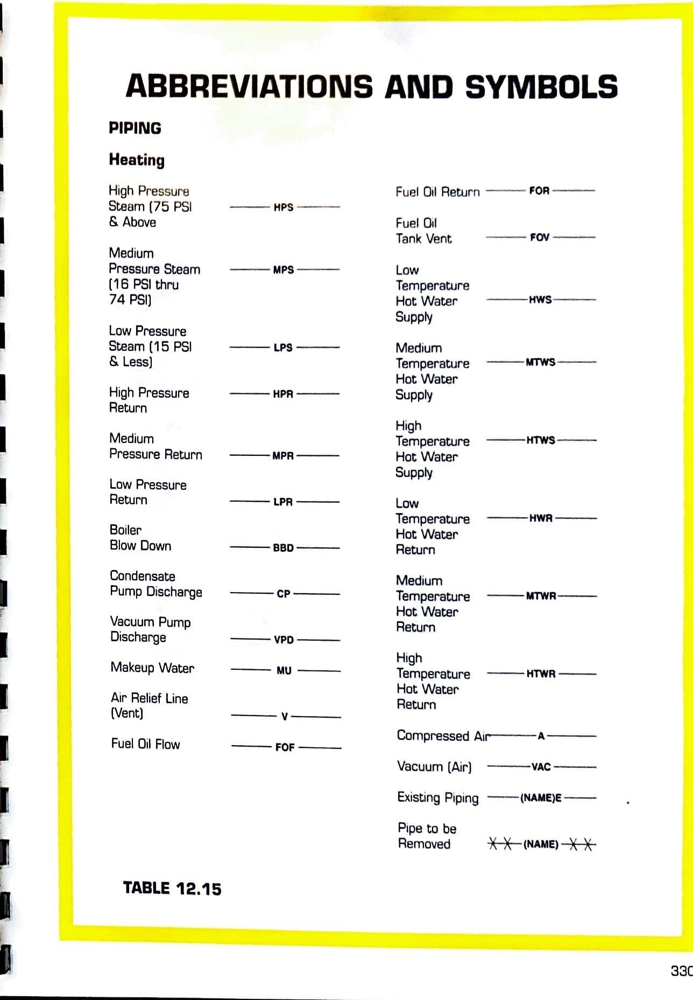
ABBREVIATIONS AND SYMBOLS PIPING Heating High Pressure Steam (75 PSI & Above Medium Pressure Steam (16 PSI thru 74 PSI) Low Pressure Steam (15 PSI & Less) High Pressure Return Medium Pressure Return Low Pressure Return Boiler Blow Down Condensate Pump Discharge Vacuum Pump Discharge Makeup Water Air Relief Line (Vent) Fuel Oil Flow TABLE 12.15 HPS MPS HPR MPR LPR BBD VPD FOF Fuel Oil Return Fuel 011 Tank Vent Low Temperature Hot Water Supply Medium Temperature Hot Water Supply High Temperature Hot Water Supply Low Temperature Hot Water Return Medium Temperature Hot Water Return High Temperature Hot Water Return FOR FOV HTWR Compressed Air—A Vacuum (Air) Existing Piping Pipe to be VAC —(NAME)E Removed aac
Page 341
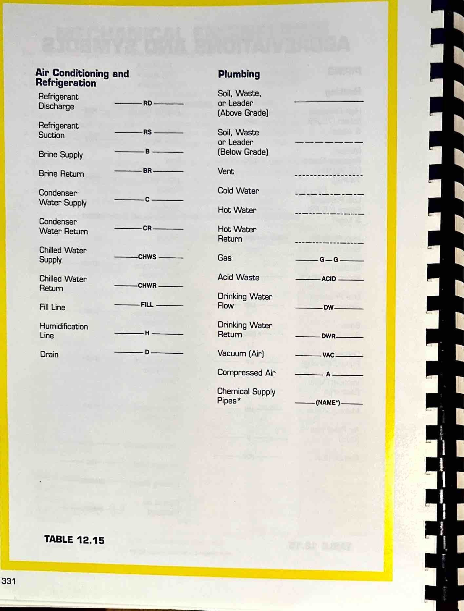
Air Conditioning and Refrigeration Refrigerant Discharge Refrigerant Suction Brine Supply Brine Rewrn Condenser Water Supply Condenser Water Return Chilled Water Supply Chilled Water Return fill Line Humidification Line Drain TABLE 12.15 RS BR c —CHWS CHWR FILL D Plumbing Soil, Waste, or Leader (Above Grade) Soil, Waste or Leader (Below Grade) Vent Cold Water Hot Water Hot Water Return Gas Acid Waste Drinking Water Flow Drinking Water Return Vacuum (Air) Compressed Air Chemical Supply Pipes* ACID DWR VAC (NAME') 331
Page 342
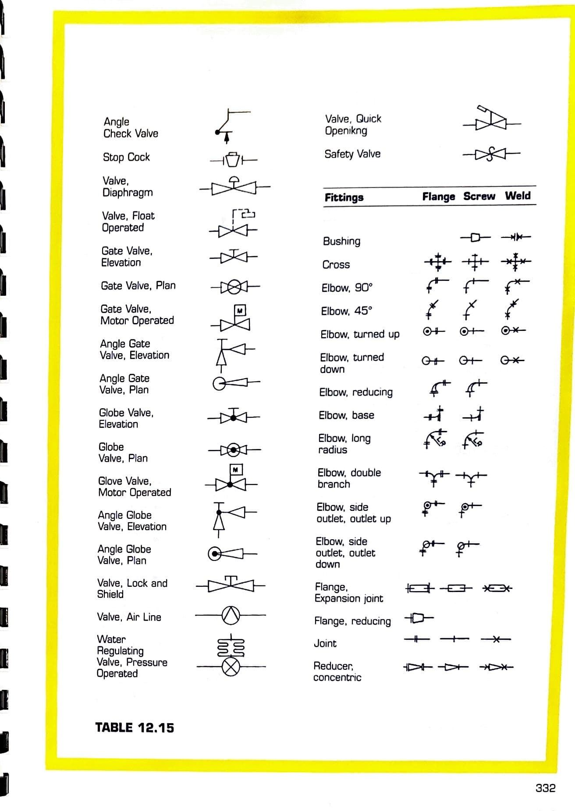
Angle Check Valve Stop Cock Valve, Diaphragm Valve, Float Operated Gate Valve, Elevation Gate Valve, Plan Gate Valve.
Motor Operated Angle Gate Valve, Elevation Angle Gate Valve, Plan Globe Valve, Elevation Globe Valve, Plan Glove Valve, Motor Operated Angle Globe Valve, Elevation Angle Globe Valve, Plan Valve, Lock and Shield Valve, Air Line Water Regulating Valve, Pressure Operated TABLE 12.15 Valve, Quick Open'kng Safety Valve Fittings Bushing Cross Elbow, goo Elbow, 450 Elbow, turned up Elbow, turned down Elbow, reducing Elbow, base Elbow, long radius Elbow.
double branch Elbow, side outlet, outlet up Elbow, side outlet, outlet down Flange, Expansion joint Flange, reducing Joint Reducer, concentric Flange Screw Weld 332
Page 343
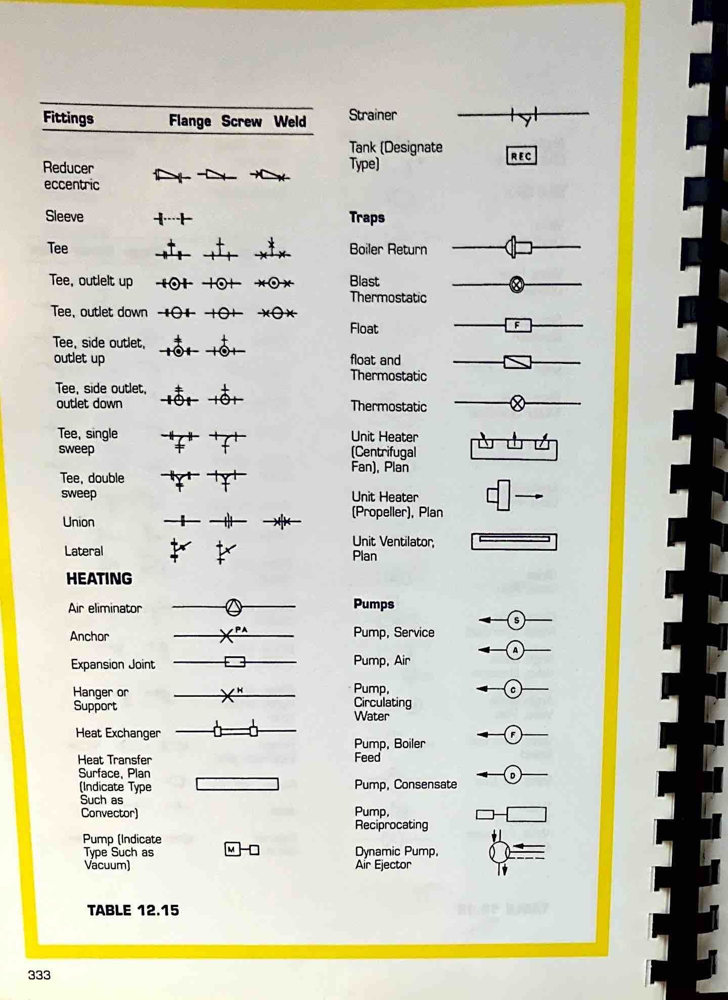
Fittings Reducer eccermc Sleeve Tee Tee, outlelt up Tee, outlet down Tee.
side outlet, outlet up Tee, Side outlet, ouuet down Tee, Single sweep Tee.
double sweep union Lateral HEATING Air eliminator Anchor Expansion Joint Hanger or Support Heat Exchanger Heat Transfer Surface, Plan (Indicate Type Such as Convector) Pump (Indicate Type Such as Vacuum) Flange Screw Weld Stratner Tank (Designate Type) Traps Boder Return Blast Thermostatic Float float and Thermostatic Thermostatic Unit Heater (Centrifugal Fan).
Plan Unit Heater (Propeller).
Plan unit Ventilator, Plan Pumps Pump, Service Pump, Air Pump, Circulating Water Pump, Boiler Feed Pump, Consensate Pump, Reciprocating Dynamic Pump, Air Ejector REC s TABLE 12.15 333
Page 344
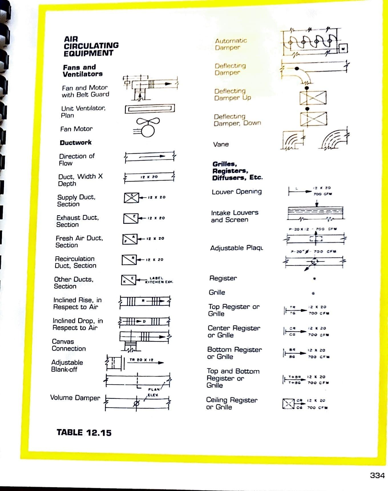
CIRCULATING EQUIPMENT Fans and Ventilators Fan and Motor With Belt Guard Unit Ventilator, Plan Fan Motor Ductwork Direction of Flow Duct, Width X Depth Supply Duct, Section Exhaust Duct, Section Fresh Air Duct, Section Recirculation Duct, Section Other Ducts, Section Inclined Rise.
in Respect to Air Inclined Drop, in Respect to Air Canvas Connection Adjustable Blank-off Volume Damper TABLE 12.15 12 20 20 20 Autornatac Deflecting Damper Deflecting Damper up Deflecting Damper.
Down Vane Grilles, Registers, Diffusers, Etc.
Louver Openjng Intake Louvers and Screen Adjustable Plaqu Register Grille Top Register or Grille Center Regtster or Grtlle Bottom Register or Grtlle Top and Bottom Register or Grille Ceiling Regtster or Grille •-201 JZ • x zo KITCHEN EN rR 20 X '2 PLAN t 20 YOO 200 20 334
Page 345
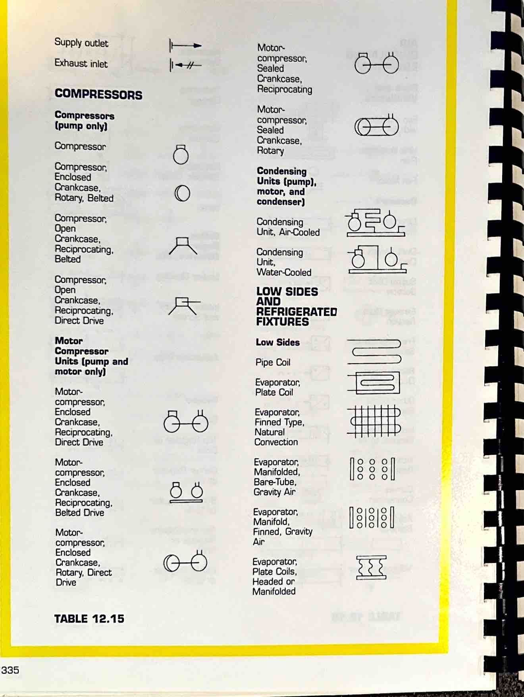
Supply outlet Exhaust inlet COMPRESSORS Compressor•s (pump only) Compressor Enclosed Crankcase, Rotary, Belted Compressor, Crankcase, Reciprocating, Belted Compressor.
Open Crankcase, Reciprocating, Direct Drtve Motor Compressor Units (pump and motor only) Motor- compressor, Enclosed Crankcase, Reciprocating, Direct Drive Motor- compressor, Enclosed Crankcase.
Reciprocating, Belted Dmve Motor- compressor, Enclosed Crankcase.
Rotary, Direct Drive TABLE 12.15 Ö O Motor- compressor, Sealed Crankcase, Reciprocating Motor- compressor, Sealed Crankcase, Rotary Condensing Units (pump), motor.
and condenser) Condensing Unit, Air-Cooled Condensing Unit, WaterCooIed LOW SIDES AND REFRIGERATED FIXTURES Low Sides Pipe Coil Evaporator, Plate Coil Evaporator.
Finned Type, Natural Convection Evaporator, Manifolded.
BareTube, Gravity Air Evaporator.
Manifold, finned.
Gravity Evaporator, Plate Coils.
Headed or Manifolded 00 0 00 0 00 0 335
Page 346
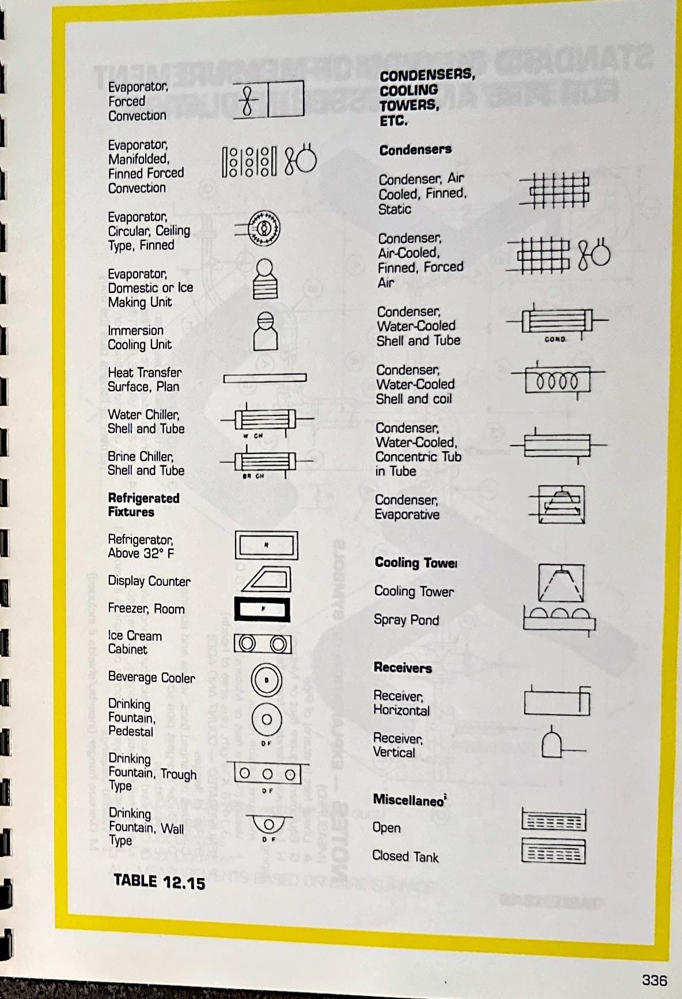
Evaporator, Forced Convection Evaporator, Manifolded, Finned Forced Convection Evaporator, Circular, Ceiling Type, Finned Evaporator, Domestic or Ice Making Unit Immersion Cooling Ur-lit Heat Transfer Surface, Plan Water Chiller, Shell and Tube Brine Chiller, Shell and Tube Refrigerated Fixtures Refrigerator.
Above 320 F Display Counter Freezer, Room Ice Cream Cabinet Beverage Cooler ooo o o CONDENSERS, COOLING TOWERS, ETC.
Condensers Condenser, Air Cooled.
Finned, Static Condenser, Air-Cooled.
Finned, Forced Condenser.
WaterCooled Shell and Tube Condenser, WaterCooled Shell and coil Condenser.
Watercooled.
Concentric Tub in Tube Condenser, Evaporative Cooling Towel Cooling Tower Spray Pond Receivers Receiver, Horizontal Receiver, Vertical Miscellaneoi Open Closed Tank GONO.
Drinking Fountain, Pedestal Drinking Fountain.
Trough Type Drinking Fountain, wall Type TABLE 12.15 o o o o o 336
Page 347
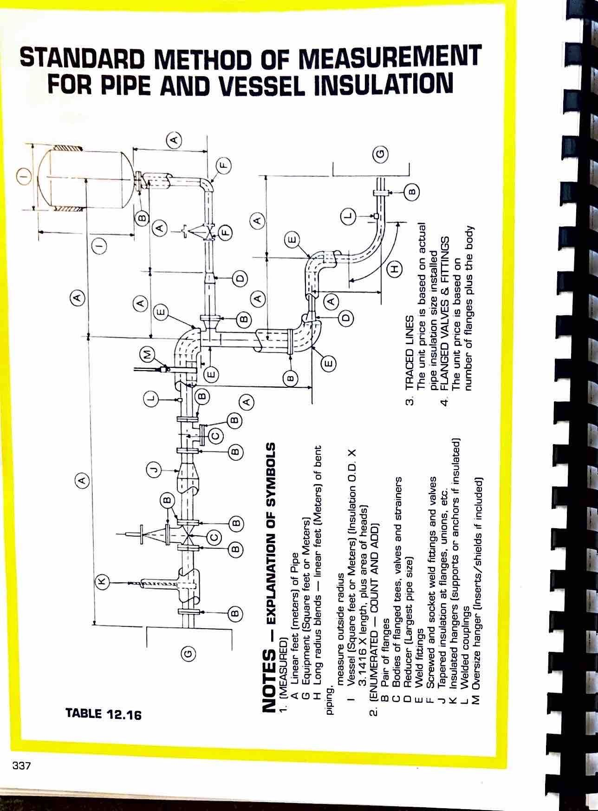
STANDARD METHOD OF MEASUREMENT FOR PIPE AND VESSEL INSULATION äL.LY— C goo E S 05 3 & coe .E TABLE 12.16 337
Page 348
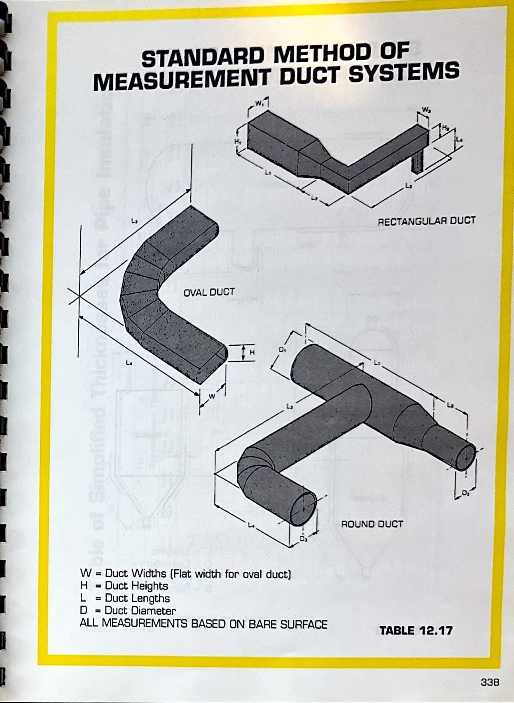
STANDARD METHOD OF MEASUREMENT DUCT SYSTEMS RECTANGULAR DUCT OVAL DUCT ROUND DUCT W = Duct Widths (Flat width for oval duct) H = Duct Heights L = Duct Lengths D — Duct Diameter ALL MEASUREMENTS BASED ON BARE SURFACE TABLE 12.17 aaa
Page 349
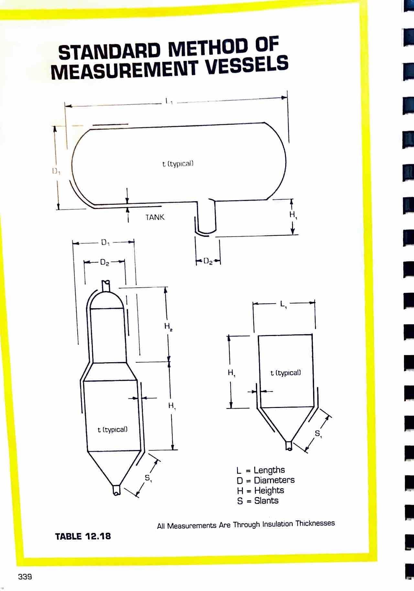
STANDARD METHOD OF MEASUREMENT VESSELS D, t (typtcal) TABLE 12.1B 339 t (typical) TANK L, t (typical) L = Lengths D = Diameters H = Heights S = Slants All Measurements Are Through Insulation Thicknesses
Page 350
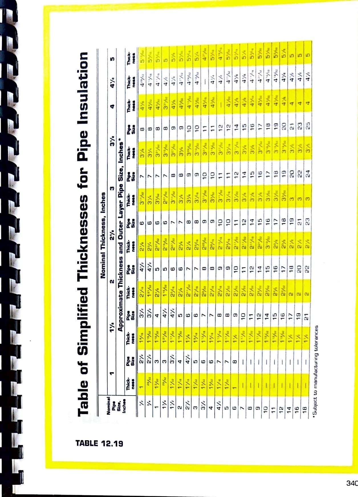
TABLE 12.19
Page 351
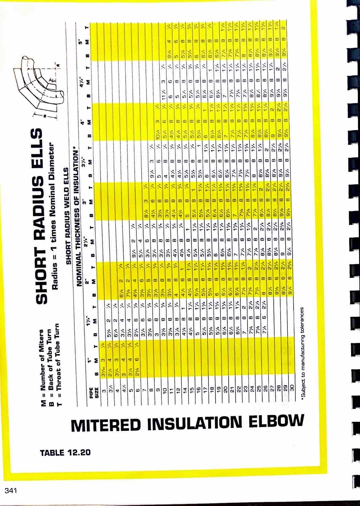
8 11 EES n 11 01 sss cu cn 2 m m MITERED INSULATION ELBOW TABLE 12.20 341
Page 352
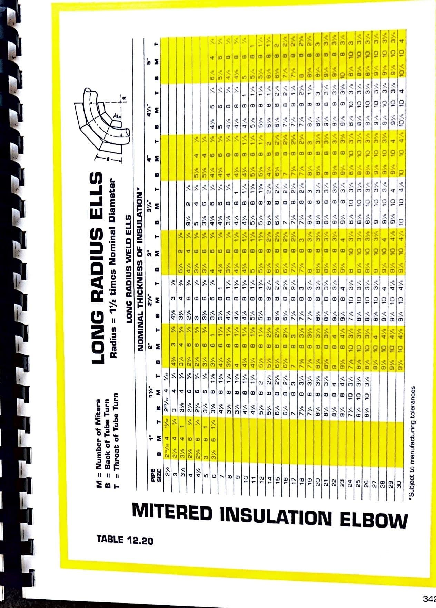
11 II a) MITERED INSULATION ELBOW TABLE 12.20
Page 353
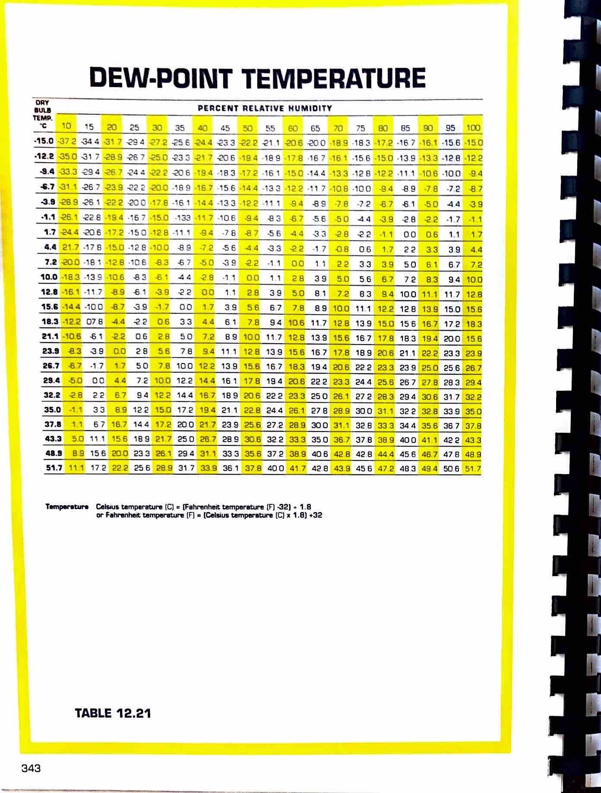
DEW-POINT TEMPERATURE PERCENT RELATIVE HUMIDITY -'S.o -372 644 7 ega 272 atn-A -1.1 20 -12.2 aso 7 -28 g 267 -250 7 4.9 061 -222 aoc .17 e 21 7 -176 aso 10 033 -267 239-222 aoc -'89 -167 .156 -11 1 25 .24 4 -167 .150 35 .16 45 aaa -233 222 1.7 4.4 7.2 10.0 -lea 12.8 7 IS.S .14 a -100 222 -206 -'83 -172 .16 1 .14 4 7 -106 .72 so 00 17 -133 -'22 -11 -87 00 2B 56 -78 11 39 61 89 111 139 161 189 21 1 28 e 36 1 65 -133 .12 2 7 -10B -100 -89 11 81 89 55 -33 11 39 67 60 -178 -167 -161 -150 .14 a 44 .22 00 28 50 78 206 .18 3 -172 -167 -156 .150 -156 -150 -139 -94 .67 17 67 122 .133 -128 -122 -106 -100 100 111 70 -78 22 50 75 -22 06 33 56 11M 85 -89 -61 00 22 50 72 128 95 133 -128 .12 2 .72 1.1 39 67 94 117 150 90 -78 -50 06 33 61 83 13 g 18.3 -122 21 -106 83 23.9 8.7 26.7 29.4 32.2 35.0 37.8 SO 43.a 48.9 51.7 07 8 -17 22 33 67 111 156 172 00 67 167 156 222 -83 -22 06 2B 50 72 122 144 189 23 3 256 .83 .17 06 2B 56 7B 100 122 150 172 21 7 26 1 -67 oo 33 so 78 100 122 144 172 20 0 25 0 29 a 31 7 44 7.2 122 144 167 19 4 21 7 26 7 31 33 9 7B 100 12B 156 17B 20 6 22B 25 6 306 35 6 378 94 117 139 167 194 22 2 24 4 27 2 32 2 372 40 0 106 12.8 156 18.3 20 6 23 3 28 9 33B 41 7 117 139 167 194 22 2 250 278 300 35 0 42 72 100 128 156 17B 206 23 3 289 31.1 367 42 8 139 167 189 22 2 24 272 300 37 B 42 8 45 e 150 178 206 23 3 25 6 28 3 31 1 33 3 44 4 472 156 183 21 1 23 9 26 7 29 4 32 2 34 4 400 456 167 194 22 2 250 27B 306 32 8 35 41 1 46 7 49 4 172 200 23 3 25 6 283 31 7 36 7 42 2 478 506 87 72 100 12B 158 156 23 g 26 7 294 350 378 43 3 51 7 Celuus temperature (C) (Fahrenheit temperature (F) -32) 1 .B or Fahrenhea (F) • (C) x 1.8) +32 TABLE 12.21 343
Page 354
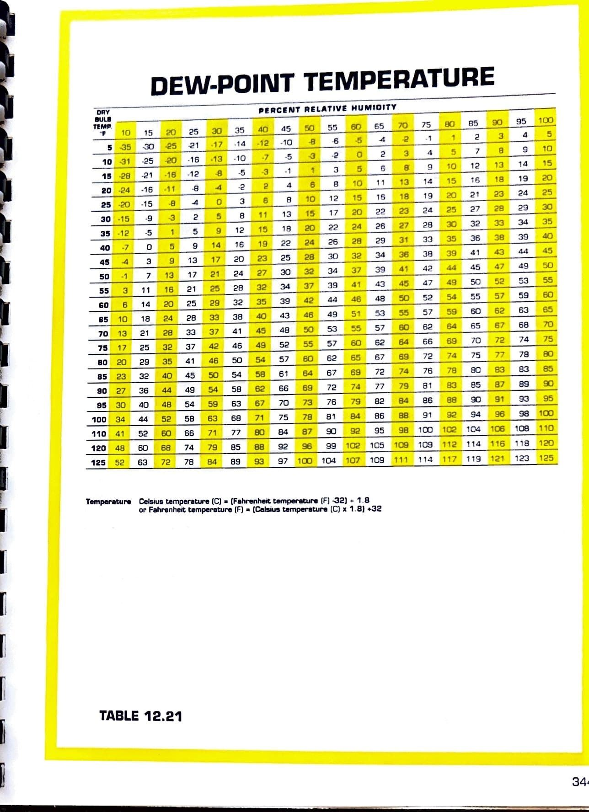
DEW-POINT TEMPERATURE TEMP 5 10 15 20 25 35 40 10 05 15 .25 .16 .15 .9 o 3 7 11 20 25 as .21 20 -16 35 .17 .13 .10 PERCENT RELATIVE HUMtO'TY 55 60 65 70 ao 45 .12 .10 01 -24 .20 .15 3 6 45 50 55 so 65 70 75 85 100 110 120 125 .8 5 13 16 20 24 28 32 35 40 44 52 60 68 72 .8 .4 2 5 9 13 17 21 25 28 33 37 41 45 49 54 58 66 74 78 o 5 9 14 17 21 25 29 33 37 42 46 50 54 59 63 71 79 84 3 8 12 16 20 24 28 32 38 41 46 50 54 58 63 68 77 85 89 2 6 11 19 23 27 32 35 45 49 54 58 62 67 71 88 93 13 22 25 30 39 43 48 52 57 61 66 70 75 92 97 6 10 24 28 32 37 42 46 12 17 22 26 30 39 49 53 10 13 17 20 23 27 30 34 41 48 52 14 18 21 25 29 32 36 40 44 52 60 63 so 55 64 69 73 87 96 57 62 67 72 76 81 104 15 20 24 28 32 37 46 51 60 65 69 74 79 92 102 107 16 22 26 29 34 39 53 57 62 67 72 77 82 86 95 105 109 13 19 23 27 31 38 41 45 ss 64 74 79 84 88 75 4 19 33 38 42 47 52 57 62 66 72 76 81 86 91 109 15 35 39 54 59 69 74 Ba 88 32 112 85 2 16 21 27 32 36 45 S5 so 65 70 75 80 90 94 114 119 3 23 33 38 43 47 52 57 62 87 72 77 83 87 91 96 116 121 95 19 24 29 39 49 59 63 74 7B 89 90 108 11B 123 Tempr•tur.
Cels•u• (C) • (F) -32) • 1 B or FahrenheC temperature (F) • ternper•tur•• (C) x I .81+32 TABLE 12.21 25 30 ao 45 so 55 60 65 70 75 85 110 34
Page 355
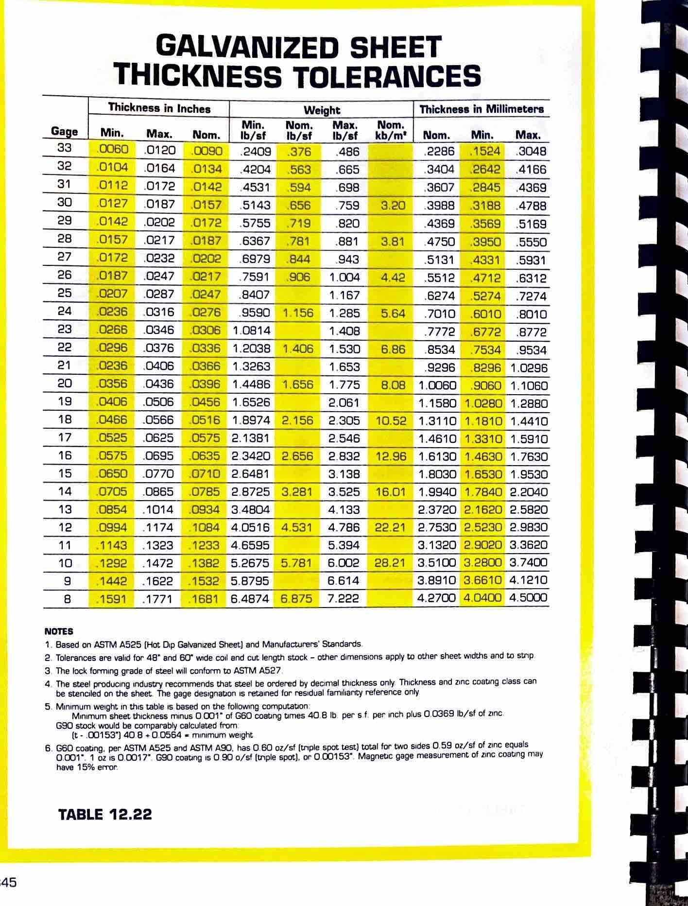
GALVANIZED SHEET THICKNESS TOLERANCES Thickness in Inches Weight Thickness in Millimeters 1.
45 Ga e 33 32 31 30 29 28 26 25 24 23 22 21 20 19 18 17 16 15 14 12 11 10 g 8 NOTES Min.
0060 .0104 .01 12 0127 .0142 .0157 0172 .01B7 .0207 0236 0266 0296 .0236 .0356 .0466 0525 ,0575 0650 .0705 .0854 0994 .1143 .1292 , 1442 .1591 Max.
0120 0164 .0172 0187 .0202 .0217 0232 .0247 0287 0316 0346 0376 0406 0436 .0506 0566 0625 0695 .0770 0865 1014 1174 1323 1472 1622 1771 Nom.
.0134 .0142 .0157 .0172 .0187 0202 -0217 .0247 .0276 .0336 0366 .0396 .0456 .0516 .0575 0635 .0710 .0785 .0934 1084 1233 1382 .1532 -1681 Min.
lb/sf .2409 4204 4531 5143 5755 6367 6979 .7591 .8407 9590 1 0814 1.2038 1 3263 1.4486 1 6526 B 974 Nom.
lb/sf .376 .563 .594 .656 .719 .781 .844 9-06 Max.
lb/sf 486 .665 69B 759 820 .881 943 004 1 167 1 285 1.408 1.530 1 653 1 775 I 2.1381 2 3420 2.6481 2 8725 3 4804 4.0516 4.6595 5.2675 5.8795 6.4874 1M56 1 1.656 2.156 2 656 3281 4.531 5.781 6875 2.061 2 305 2.546 3.138 3 E25 4.183 4.786 5.394 6.002 6 614 7.222 Nom.
kb/m• 3.20 3.81 4.42 564 686 10.52 12.96 16.01 2221 28.21 Nom.
.2286 3404 3607 3988 4369 4750 .5131 5512 .6274 .7010 .7772 8534 9296 1.0060 1.1580 1.3110 1.4610 1 6130 1.
1 .9940 2.3720 2.7530 a.
1320 3.5100 3.8910 4.2700 Min.
.1524 ,2642 2845 .3188 .3569 .3950 .4331 .4712 .5274 .6010 .6772 .7534 .8296 9060 10280 IMBIO 1.3310 1.4630 1.6530 1.7840 2M620 2.5230 32800 36610 4.0400 Max.
8048 4166 4369 14788 .5169 .5550 .5931 .6312 7274 .8010 ,8772 .9534 1.0296 1.1060 1.2880 1.4410 1.5910 1 7630 1 9530 2.2040 2.5820 2.9830 3.8620 3.7400 4.1210 4.5000 1 Based on A525 tH0t DIP Gatvanæed Sheet) and ManufacturerS Sændards 2.
Tolerances are valid for 48' and 60" Wide cod and cut length - other dimensons apply to other sheet Widths and to me lock fom•ung grade of steel conform to ASTM A527 3 The steel producing tndusv-y recommends that steel be ordered by dectmäl thickness only.
Thickness and Zinc coabng class can 4 be stenciled on the sheet The gage destgnabon IS retaned for resldual familiarity reference only Mn•mum weight In this table IS based on the follownng computauon 5.
Mnmum sheet thickness m.nus O WI • of G60 coaung umes 40 8 lb per sf.
per inch plus 0.0369 lb/sf of anc G90 stock would be comparably calculated from (t - WI 53) 40 8 +0 0564 mjmrnum weght G60 coaung.
per ASTM A525 and ASTM A90.
has 0 60 oz/sf (trtple spot test) total for two sides 0.59 oz/sf Of anc equals 6 001 • .
1 oz IS 0 0017 • G90 coaung 0 90 0/sf (tnple spot), or 0 00153" Magnetac gage measurement of Zinc coaung may have 15% emor TABLE 12.22
Page 356
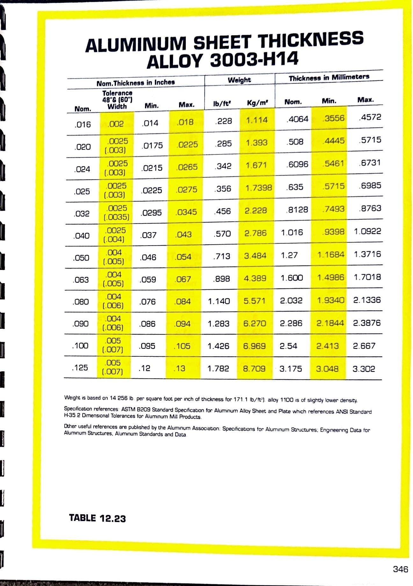
ALUMINUM SHEET THICKNESS ALLOY 3003+114 Nom.Thickness in Inches Weight Thickness in Millimeters Nom.
016 .020 .024 .025 .032 040 .050 063 .080 .090 100 .125 Tolerance Width 002 .0025 (.003) 0025 (.003) 0025 (003) 0025 ( 0035) .0025 ( 004) ( 005) (.005) (006) (.006) 005 ( 007) 005 (007) Min.
014 0175 0215 0225 0295 .037 046 059 .076 086 .095 12 Max.
.018 0225 0265 .0275 .0345 043 .054 067 084 .094 .105 13 lb/ft• 228 285 342 356 456 .570 713 898 l.
140 1.283 1.426 1.782 Kg/m• 1.114 1893 1 671 1.7398 2.22B 2.786 3484 4.389 5671 6.270 6.969 8.709 Nom.
4064 508 6096 .635 8128 1 016 1 600 2.032 2.286 2.54 3.175 Min.
3556 4445 5461 5715 .7493 9398 1M 684 1.4986 1 gao 2.1844 2.413 3048 Max.
4572 5715 6731 6985 8763 1 0922 1.3716 1.7018 2.1336 2.3876 2.667 3 Æ02 Wetght IS based on 14 256 lb per square foot per nch Of thickness for 171 1 lb/ftJ), alloy 1100 ot shghdy lower dens.'C+ Specificabon references ASTM 8209 Standard Specification for Alumnum Alloy Sheet and Plate which references ANSI H-35 2 Omens•onal Tolerances for Alumnum Mill Products Other useful references ore published by the Alumnum Associauon- Spec.ficauons for Aumjnum Structures.
Engtneemng Data for Alumnum Structures.
Alum.num Standards and Data TABLE 12.23 346
Page 357
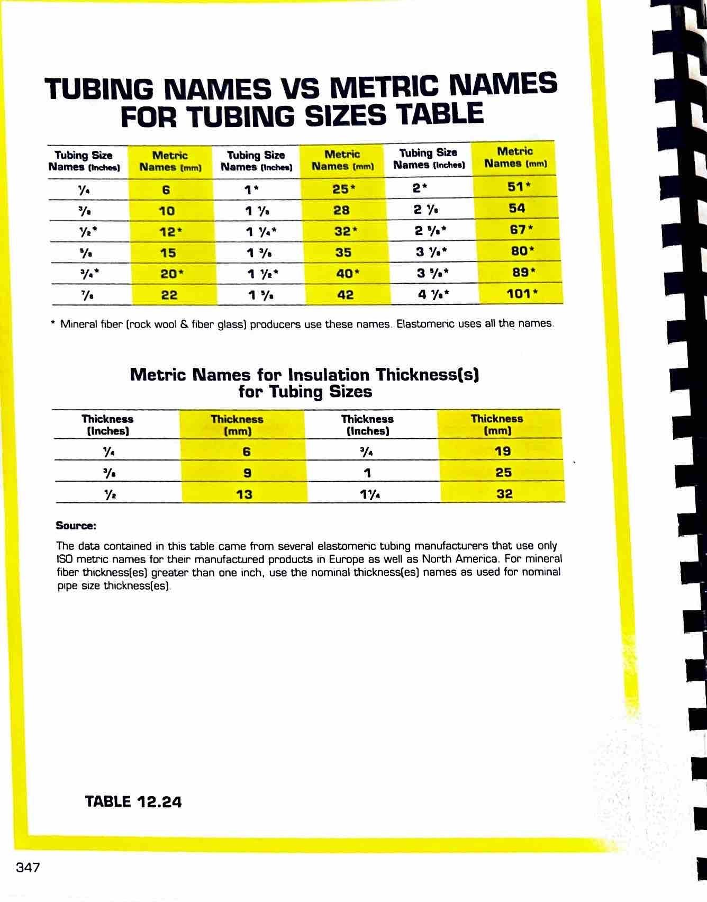
TUBING NAMES VS METRIC NAMES FOR TUBING SIZES TABLE Tubing Size Metric Names Names tmm) 6 10 15 20 • 22 Tubing Size Names (Inche•) Metric Tubing Size Metric Names (Inch..) Names (mm) Names (mm) 28 35 42 54 • Mineral fiber (rock wool & fiber glass) producers use these names.
Elastomertc uses all the names Metric Names for Insulation Thickness(s) for Tubing Sizes hickness (Inches) Source: Thickness (mm) 6 13 Thickness (Inches) 11/4 Thickness (mm) 19 25 32 The data contaned in this table came from several elastomemc tubing manufacturers that use only ISO meTtc names for their manufactured products In Europe as well as North America.
For mineral fiber thickness(es) greater than one Inch, use the nominal thickness(es) names as used for nominal Pipe Size thickness(es) TABLE 12.24 347
Page 358
No OCR text was detected on this source page.